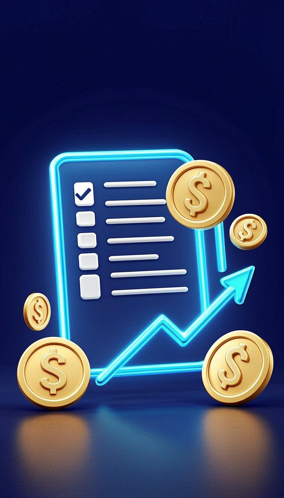

Guide Definitif 2025
Les 100 meilleures applications pour gagner de l'argent en ligne
Le guide le plus complet pour generer des revenus en ligne. 100 applications testees et classees par categorie, avec strategies concretes, gains potentiels et astuces de pros pour transformer votre smartphone en machine a cash.
Ebook Complet • 100 Applications • 10 Categories • Plan d'Action 30 Jours
Edition 2025
Sommaire
01
Freelance et micro-taches : vendez vos competences
(10 apps)
02
Sondages et etudes de marche : donnez votre avis contre de l'argent
(10 apps)
03
Cashback et shopping : rentabilisez vos achats en ligne
(10 apps)
04
Photographie et creation : monétisez vos visuels
(10 apps)
05
Tutorat et enseignement : partagez vos connaissances
(10 apps)
06
Contenu et ecriture : monétisez vos mots
(10 apps)
07
Affiliation et influence : recommandez, gagnez
(10 apps)
08
E-commerce et dropshipping : vendez sans stock
(10 apps)
09
Investissement et micro-investissement : faites travailler votre argent
(11 apps)
10
Location et economie de partage : monétisez vos actifs
(10 apps)
Pourquoi ce guide va transformer vos revenus en ligne
Gagner de l'argent en ligne n'a jamais ete aussi accessible qu'en 2025. Des milliards de personnes utilisent quotidiennement des applications qui pourraient generer des revenus, mais la majorite ignorent qu'elles existent ou ne savent pas comment les exploiter. Ce guide est ne d'un constat simple : il existe des centaines d'applications legitimement payantes, mais la plupart des gens se perdent dans la masse d'informations disponibles en ligne, ou pire, se font avoir par des arnaques promettant des gains mirobolants sans effort.
Ce guide est different. Nous avons selectionne, teste et analyse les 100 meilleures applications pour gagner de l'argent en ligne, reparties en 10 categories couvrant tous les profils et tous les niveaux : freelance et micro-taches, sondages et etudes de marche, cashback et shopping, photographie et creation, tutorat et enseignement, contenu et ecriture, affiliation et influence, e-commerce et dropshipping, investissement et micro-investissement, location et economie de partage. Pour chaque application, vous trouverez une description detaillee, le type d'activite, le niveau de difficulte, le gain potentiel reel, les etapes pour demarrer, les avantages, les inconvenients et une astuce de pro pour maximiser vos resultats.
Ce qui distingue ce guide des autres, c'est son approche realiste et actionnable. Nous ne promettons pas que vous deviendrez millionnaire en 30 jours. Nous promettons qu'en suivant les strategies decrites dans ce guide, vous pourrez generer des revenus complementaires de 100 a 5000 euros par mois, selon votre investissement en temps et vos competences. Les chiffres avances sont bases sur des donnees reelles de la communaute d'utilisateurs de chaque plateforme, pas sur des promesses marketing.
Comment utiliser ce guide
Ne tentez pas d'utiliser les 100 applications d'un coup. Choisissez 2-3 applications qui correspondent a votre profil et a votre niveau, maitrisez-les pendant 30 jours, puis etendez progressivement. La cle du succes n'est pas la quantite mais la constance. Un utilisateur qui maitrise 3 applications genere plus de revenus qu'un utilisateur qui en essaie 20 superficiellement.
Chaque chapitre suit une structure identique pour faciliter votre lecture : une introduction qui explique le contexte et les opportunites de la categorie, les 10 meilleures applications avec descriptions detaillees, un tableau comparatif pour choisir rapidement, un exercice pratique pour passer a l'action immediatement, un point cle a retenir, un avertissement pour eviter les pieges, et des astuces de pros pour maximiser vos gains.
A la fin du guide, vous trouverez un bonus exclusif : un plan d'action 30 jours semaine par semaine pour structurer votre demarrage, et un comparatif des meilleures applications par profil (etudiant, parent au foyer, salarie, entrepreneur). Quel que soit votre profil, votre niveau ou vos objectifs, vous trouverez dans ce guide les cles concretes pour transformer votre temps libre en revenus reels.
Prenez des notes, surlignez les applications qui vous interessent, et surtout passez a l'action des aujourd'hui. Les applications ne valent rien si vous ne les utilisez pas. Tournez la page et commencez votre transformation financiere.
Le freelance en ligne est devenu l'une des voies les plus accessibles et les plus rentables pour generer des revenus depuis chez vous. Que vous soyez developpeur, designer, redacteur, traducteur, assistant virtuel ou meme sans competence technique particulier, il existe des plateformes concues specifiquement pour vous connecter a des clients qui paient en euros, en dollars ou dans d'autres devises fortes. Les micro-taches, en particulier, sont un excellent point de depart pour les debutants : elles consistent a realiser de petites missions (identifier des images, categoriser des donnees, repondre a des questionnaires) qui prennent quelques minutes chacune et paient quelques centimes a quelques euros. Cumulees sur une journee, elles peuvent generer entre 10 et 50 euros. Les plateformes freelancer plus serieuses comme Upwork ou Fiverr permettent, elles, de construire une vraie carriere et de generer des revenus mensuels de plusieurs milliers d'euros une fois une client etablie. Ce chapitre presente les 10 meilleures applications pour demarrer dans le freelance et les micro-taches, avec leurs avantages, inconvenients et strategies pour maximiser vos gains.
Upwork est la plus grande plateforme freelance au monde avec plus de 18 millions de freelances et 5 millions de clients. Elle couvre tous les metiers : developpement, design, redaction, marketing, traduction, comptabilite, conseil. Vous créez un profil, soumettez des propositions sur des projets, et construisez votre reputation au fil des missions. Le plan gratuit permet de postuler a 15 projets par mois, ce qui suffit pour demarrer.
Gain potentiel
20-200EUR/h selon votre expertise. Les freelances etablis facturent 50-150EUR/h. Revenu mensuel realiste : 1500-8000EUR.
Comment demarrer
Creez un profil detaille avec portfolio, passez les tests de competences Upwork, postulez a 5-10 petits projets pour obtenir vos premieres evaluations 5 etoiles, puis visez des projets plus importants.
Avantages
- Huge volume de projets dans tous les domaines
- Protection des paiements garantie
- Systeme d'evaluations qui construit votre reputation
Inconvenients
- Commission de 10% sur chaque facture
- Concurrence forte pour les debutants
- 15 propositions gratuites par mois seulement
Astuce de pro
Visez les petits projets de 50-100EUR pour vos premieres missions. L'objectif n'est pas le gain mais l'evaluation 5 etoiles. Une fois que vous avez 5-10 evaluations positives, vous pouvez viser des projets de 1000-5000EUR.
Fiverr a invente le concept des 'gigs' : des services packagés que vous proposez a un prix fixe, a partir de 5 euros. Vous ne cherchez pas les clients, ce sont eux qui viennent a vous. C'est ideal pour les debutants qui veulent tester le marche rapidement. Aujourd'hui, les gigs peuvent aller jusqu'a plusieurs milliers d'euros. Fiverr couvre tous les services digitaux : design, redaction, voix-off, videos, marketing, programmation, business.
Gain potentiel
5-10000EUR par commande. Les vendeurs etablis generent 500-5000EUR/mois. Le top 1% depasse 10000EUR/mois.
Comment demarrer
Creez 3-5 gigs differents autour de vos competences, avec des visuels accrocheurs, des descriptions detaillees et des prix competitifs au debut. Optimisez vos gigs pour la recherche Fiverr avec les bons mots-cles.
Avantages
- Inscriptions et publications gratuites
- Les clients viennent a vous
- Possibilite de proposer des extras payants
Inconvenients
- Commission de 20% sur chaque vente
- Concurrence tres forte
- Difficile de percer sans evaluations initiales
Astuce de pro
Proposez une garantie satisfait ou rembourse et une livraison rapide (24-48h) pour vos premiers gigs. Cela vous aidera a obtenir vos premieres commandes et evaluations positives plus rapidement.
MTurk est la plateforme historique de micro-taches d'Amazon. Les 'workers' realisent des Human Intelligence Tasks (HITs) comme identifier des objets sur des images, transcrire de courts extraits audio, repondre a des sondages, ou categoriser des donnees. Chaque HIT paie quelques centimes a quelques dollars. Les taches repetitives mais simples permettent de generer un revenu horaire de 3-10 dollars selon votre vitesse et les HITs disponibles.
Gain potentiel
3-10EUR/h selon la region et les taches. 200-800EUR/mois possible a temps partiel.
Comment demarrer
Inscrivez-vous sur mturk.com, attendez l'approbation (peut prendre quelques jours), puis utilisez des extensions comme MTurk Suite ou Turkopticon pour trouver les meilleurs HITs et eviter les requesteurs malhonnetes.
Avantages
- Taches courtes et flexibles
- Aucune competence requise
- Inscription gratuite et paiements reguliers
Inconvenients
- Revenu horaire faible
- Disponibilite variable selon votre pays
- Peu de progression possible
Astuce de pro
Utilisez l'extension MTurk Suite (gratuite) pour bloquer les mauvais requesteurs, trier les HITs par ratio paiement/temps, et accepter automatiquement les meilleures taches. Votre revenu horaire peut doubler.
Toloka est la plateforme de micro-taches de Yandex, le Google russe. Les taches consistent a entrainer des intelligences artificielles : identifier des elements sur des images, verifier des recherches web, transcrire de l'audio, comparer des sites web. La plateforme est particulierement active en Europe et paie en dollars via PayPal ou Payoneer. Le seuil de retrait est bas (1 dollar) ce qui permet d'encaisser rapidement vos gains.
Gain potentiel
2-8EUR/h. 100-500EUR/mois possible avec regularite.
Comment demarrer
Inscrivez-vous gratuitement, completez les taches de formation pour acceder aux mieux payees, et utilisez l'application mobile pour faire des taches pendant vos temps morts (transport, attentes).
Avantages
- Application mobile pour travailler partout
- Seuil de retrait tres bas (1 dollar)
- Formation integree pour acceder aux taches premium
Inconvenients
- Taches parfois repetitives
- Concurrence croissante
- Paiement en dollars (conversion necessaire)
Astuce de pro
Passez les tests de competences Toloka pour acceder aux taches premium (4-8EUR/h). Une fois votre skill level augmente, vous aurez acces a des taches exclusives beaucoup mieux remunerees.
SproutGigs (anciennement Picoworkers) combine micro-taches classiques et petits jobs freelance. Vous pouvez gagner de l'argent en likant des posts Facebook, en vous inscrivant a des newsletters, en regardant des videos YouTube, en telechargeant des applications, ou en realisant de petites missions pour des entreprises. Le concept est simple : les petites actions rapportent peu mais s'accumulent vite.
Gain potentiel
1-5EUR/h. 50-300EUR/mois en temps partiel.
Comment demarrer
Inscrivez-vous gratuitement, parcourez la liste des microjobs disponibles, et accumulez les petites taches. Le seuil de retrait est de 5 dollars via PayPal, Litecoin ou Skrill.
Avantages
- Taches tres faciles et accessibles
- Application mobile disponible
- Plusieurs methodes de retrait
Inconvenients
- Revenu horaire tres faible
- Taches parfois peu interessantes
- Concurrence sur les meilleurs jobs
Astuce de pro
Combinez SproutGigs avec d'autres plateformes de micro-taches pendant vos temps morts. Ne l'utilisez pas seul : c'est un complement pour arrondir vos fins de mois plutot qu'une source principale de revenus.
Clickworker est une plateforme allemande de micro-taches specialisee dans l'entrainement des intelligences artificielles. Les taches incluent la prise de photos de produits, l'enregistrement de voix, la transcription audio, la categorisation de textes et la traduction. La plateforme est serieuse, paie en euros via PayPal ou Payoneer, et propose des taches premium pour les workers qui passent les tests de qualification.
Gain potentiel
3-12EUR/h. 200-1000EUR/mois possible a temps partiel.
Comment demarrer
Creez un compte, completez votre profil avec vos langues parlees, passez les tests de qualification pour acceder aux taches premium, et installez l'application mobile UHRS pour acceder aux taches de recherche web les mieux payees.
Avantages
- Paiement en euros via PayPal
- Taches premium bien payees via UHRS
- Plateforme serieuse europeenne
Inconvenients
- Tests de qualification obligatoires
- Disponibilite variable des taches
- Processus d'inscription plus long
Astuce de pro
Passez le test UHRS (Universal Human Relevance System) des votre inscription. Cela vous donne acces aux taches les mieux payees de Clickworker, souvent 8-15EUR/h pour evaluer des resultats de recherche.
Remotasks (de Scale AI) est une plateforme specialisee dans l'entrainement des intelligences artificielles pour les voitures autonomes et autres applications AI. Les taches consistent a annoter des images (identifier les pietons, voitures, panneaux), a evaluer des modeles AI, et a realiser des taches plus complexes apres formation. Les taches les plus avancees paient 15-30 dollars de l'heure.
Gain potentiel
5-30EUR/h. 500-3000EUR/mois possible avec les taches premium.
Comment demarrer
Inscrivez-vous, suivez les formations gratuites (qui durent 1-3 heures chacune), passez les certifications pour acceder aux taches premium, puis travaillez sur les projets disponibles.
Avantages
- Taches premium tres bien payees
- Formations gratuités pour acceder aux meilleurs projets
- Domaine en croissance (AI)
Inconvenients
- Formations longues obligatoires
- Taches parfois techniques
- Disponibilite variable selon les projets
Astuce de pro
Suivez le maximum de formations Remotasks disponibles. Chaque certification debloque de nouvelles categories de taches mieux payees. Apres 2-3 semaines, vous pouvez atteindre 15-25EUR/h avec les projets annotes.
Microworkers est l'une des plus anciennes plateformes de micro-taches, en activite depuis 2007. Le principe est simple : des petites taches de quelques secondes a quelques minutes (visiter un site, liker une video, s'inscrire a un site, tester une application) pour quelques centimes a quelques euros. La plateforme est ouverte internationalement et paie via PayPal, Skrill ou Payoneer.
Gain potentiel
1-4EUR/h. 50-250EUR/mois en temps partiel.
Comment demarrer
Creez un compte gratuit, completez les taches disponibles dans votre region, atteignez le seuil de retrait de 9 dollars et encaissez via PayPal.
Avantages
- Plateforme ancienne et fiable
- Taches faciles et accessibles
- Plusieurs options de retrait
Inconvenients
- Taches tres mal payees
- Peu de taches disponibles
- Seuil de retrait eleve
Astuce de pro
Visez les taches 'Hire Group' qui sont des missions plus longues et mieux payees. Elles apparaissent moins souvent mais paient 5-50 dollars pour 30-60 minutes de travail.
TaskRabbit (achete par IKEA) connecte des personnes qui ont besoin de services (montage de meubles, demenagement, menage, assistance administrative, cours particuliers) avec des Taskers qui les realisent. Bien que beaucoup de taches soient physiques, certaines sont virtuelles (assistance administrative, design, redaction). Disponible dans plusieurs grandes villes europeennes, TaskRabbit est ideal pour combiner activite physique et revenus.
Gain potentiel
15-50EUR/h selon les taches. 1000-4000EUR/mois possible a temps plein.
Comment demarrer
Inscrivez-vous, completez la verification d'identite et le background check, fixez vos tarifs horaires, et acceptez les taches qui vous conviennent. Le paiement se fait automatiquement via l'application.
Avantages
- Tarifs fixes par vous-meme
- Paiement automatique via l'app
- Activite physique et sociale
Inconvenients
- Disponible uniquement dans certaines villes
- Background check obligatoire
- Concurrence dans les grandes villes
Astuce de pro
Specialisez-vous dans une niche (montage IKEA, assistance informatique, demenagement) plutot que d'accepter toutes les taches. Les Taskers specialises peuvent facturer 30-50% de plus que les generalistes.
Toptal est la plateforme freelance la plus selective au monde. Elle n'accepte que les top 3% des freelances qui postulent, apres un processus de selection rigoureux en 4 etapes. Une fois accepte, vous avez acces aux meilleurs clients (Apple, JPMorgan, Airbnb) avec des tarifs premium de 60-200 dollars de l'heure. C'est le graal du freelance haut de gamme.
Gain potentiel
60-200EUR/h. 10000-50000EUR/mois possible pour les profils les plus demandes.
Comment demarrer
Creez un profil detaille, preparez votre portfolio, postulez, et preparez-vous a un processus de selection de 2-4 semaines incluant tests techniques, entretiens comportementaux et projet pratique.
Avantages
- Clients premium et projets haut de gamme
- Tarifs les plus eleves du marche
- Pas de commission, vous facturez directement
Inconvenients
- Processus de selection tres difficile
- Exige 3-5 ans d'experience minimum
- Disponibilite temps plein requise
Astuce de pro
Si vous avez deja 5+ ans d'experience et un portfolio solide, postulez sur Toptal. Meme un seul client Toptal peut transformer votre carriere freelance avec des revenus de 10000+ EUR/mois recurrents.
| Application | Niveau | Revenu/h | Mieux pour |
|---|
| Upwork | Intermediaire | 20-200EUR | Freelance professionel |
| Fiverr | Debutant | 5-10000EUR/job | Services rapides |
| MTurk | Debutant | 3-10EUR | Micro-taches repetitives |
| Toloka | Debutant | 2-8EUR | Temps libres courts |
| SproutGigs | Debutant | 1-5EUR | Arrondir fins de mois |
| Clickworker | Debutant | 3-12EUR | Taches UHRS premium |
| Remotasks | Intermediaire | 5-30EUR | Formation AI |
| Microworkers | Debutant | 1-4EUR | Taches tres courtes |
| TaskRabbit | Intermediaire | 15-50EUR | Services physiques |
| Toptal | Expert | 60-200EUR | Freelance haut de gamme |
Exercice pratique : passez a l'action
- Choisissez 2 plateformes correspondant a votre niveau (debutant : Fiverr + Toloka ; intermediaire : Upwork + Clickworker)
- Creez un profil detaille sur chaque plateforme avec une bio professionnelle et un portfolio
- Passez 1 heure a explorer les taches/projets disponibles pour comprendre le marche
- Soumettez votre premiere proposition ou creez votre premier gig/service
- Fixez-vous un objectif realiste : 50EUR de gains la premiere semaine
Point cle a retenir
Le freelance en ligne est un marathon, pas un sprint. La plupart des freelances reussis mettent 3-6 mois a construire une client etable. Les 3 premiers mois sont les plus difficiles : peu de revenus, beaucoup d'efforts. Mais une fois que vous avez 5-10 evaluations positives, tout s'accelere. Perserverez et traitez chaque petite mission comme une opportunite de construire votre reputation.
Astuces rapides pour cette categorie
- Creez un portfolio en ligne des le debut (meme avec des projets personnels) pour augmenter vos chances de decrocher des missions.
- Repondez aux offres dans les 2 heures suivant leur publication : les 5 premiers candidats ont 70% de chances de remporter la mission.
- Specialisez-vous dans une niche precise plutot que d'etre generaliste. Les specialists facturent 2-3 fois plus que les generalistes.
- Demandez des evaluations detaillees a vos premiers clients. Les evaluations sont la cle pour augmenter vos tarifs progressivement.
Erreur a eviter
Ne sous-estimez jamais l'importance de votre profil et de vos premieres evaluations. Les 5 premieres missions definissent toute votre carriere freelance sur la plateforme. Acceptez des missions moins payees au debut pour construire une reputation solide.

Les sondages remuneres sont l'une des methodes les plus simples pour gagner de l'argent en ligne, accessibles a tous, sans aucune competence particuliere. Les entreprises depensent des milliards d'euros chaque annee pour comprendre les comportements des consommateurs, et elles sont prêtes a payer pour votre avis. Bien que les revenus individuels par sondage soient modestes (0,50 a 5 euros en moyenne), la regularite et la simplicite de la tache permettent de generer un complément de revenus de 50 a 300 euros par mois. La cle du succes avec les sondages est la diversification : inscrivez-vous sur plusieurs plateformes pour toujours avoir des sondages disponibles, et utilisez les temps morts (transport, attentes) pour les completer. Ce chapitre presente les 10 meilleures applications de sondages et d'etudes de marche, avec leurs specificites, leurs taux de paiement et les strategies pour maximiser vos gains sans perdre votre temps.
Swagbucks est l'une des plateformes les plus populaires au monde avec plus de 20 millions d'utilisateurs. Outre les sondages, elle remunere le shopping en ligne, le visionnage de videos, les jeux, les recherches web, et l'installation d'applications. Vous gagnez des SB (points) convertibles en cartes cadeaux (Amazon, PayPal, etc.) ou en cash via PayPal. Un nouveau membre peut facilement gagner 20-50 euros le premier mois en cumulant les activites.
Gain potentiel
20-100EUR/mois en temps partiel (1h/jour).
Comment demarrer
Inscrivez-vous gratuitement, completez votre profil detaillement (cela debloque des sondages cibles), installez la barre de recherche Swagbucks pour gagner des points passivement, et utilisez l'application mobile pour les sondages dans vos temps libres.
Avantages
- Multiple facons de gagner au-dela des sondages
- Bonus de bienvenue de 5-10EUR
- Cartes cadeaux Amazon et PayPal disponibles
Inconvenients
- Certains sondages disqualifient en cours de route
- Systeme de points peut etre confus
- Temps requis pour atteindre le seuil de retrait
Astuce de pro
Atteignez votre objectif quotidien Swagbucks (visible sur le dashboard) chaque jour pour gagner un bonus. Combine avec les recherches web et les videos, vous pouvez generer 1-3EUR par jour en semi-passif.
Toluna est l'une des plateformes de sondages les plus anciennes et les plus respectees. Elle paie en points convertibles en cartes cadeaux (Amazon, iTunes, Netflix) ou en cash via PayPal. Toluna se distingue par sa communaute active ou vous pouvez creer vos propres sondages, participer a des discussions, et gagner des points supplementaires. Les sondages durent 10-30 minutes et paient 500-5000 points chacun (1000 points = ~0,30 EUR).
Gain potentiel
20-80EUR/mois avec regularite.
Comment demarrer
Inscrivez-vous, completez les profils detailles (chaque profil complete debloque des sondages supplementaires), et utilisez l'application mobile pour repondre aux sondages partout.
Avantages
- Communaute active et engageante
- Sondages interessants et varies
- Application mobile bien concue
Inconvenients
- Conversion points/euros defavorable
- Seuil de retrait eleve (30000 points pour 10EUR)
- Sondages parfois longs pour le paiement
Astuce de pro
Activez les notifications email et mobile pour etre alerte des qu'un nouveau sondage arrive. Les sondages premium sont en nombre limite et se remplissent en quelques heures.
YSense est une plateforme owned par Prodege LLC (meme groupe que Swagbucks) qui combine sondages, offres (telechargements d'apps, inscriptions), et micro-taches. Elle est particulierement populaire en Europe et paie directement en dollars via PayPal, Payoneer ou Skrill. Le seuil de retrait est bas (10 dollars) et le paiement est rapide (3-5 jours). Les sondages paient entre 0,40 et 2 dollars pour 10-30 minutes.
Gain potentiel
30-150EUR/mois en activite reguliere.
Comment demarrer
Inscrivez-vous gratuitement, completez les profils (essentiels pour qualifier aux sondages), et utilisez la section 'Offers' pour des missions plus remuneratrices (5-30 dollars par offre).
Avantages
- Seuil de retrait bas (10 dollars)
- Paiements rapides via PayPal
- Plusieurs types d'offres disponibles
Inconvenients
- Disponibilite variable selon les pays
- Sondages disqualifiants frequents
- Interface un peu datée
Astuce de pro
Utilisez la section 'Offers' pour des gains beaucoup plus eleves. Telecharger une application financiere et l'utiliser pendant 5 minutes peut rapporter 10-30 dollars, contre 0,50 dollar pour un sondage.
Survey Junkie est l'une des plateformes de sondages les plus populaires aux Etats-Unis, mais elle est accessible dans plusieurs pays. Elle se concentre exclusivement sur les sondages (pas d'autres activites), ce qui rend l'experience plus simple et moins dispersée. Les points convertissent directement en cash via PayPal ou en cartes cadeaux. Le taux de conversion est transparent : 100 points = 1 dollar.
Gain potentiel
20-80EUR/mois selon disponibilite dans votre pays.
Comment demarrer
Inscrivez-vous, completez tous les profils (essentiels pour la qualification), et verifiez quotidiennement les nouveaux sondages disponibles.
Avantages
- Conversion simple et transparente
- Pas de taches parasites
- Reputation solide depuis 2013
Inconvenients
- Disponibilite limitee hors USA
- Disqualification frequente
- Revenu horaire faible
Astuce de pro
Meme si vous etes disqualifie d'un sondage apres 2-3 minutes, Survey Junkie vous donne 2-3 points de compensation. Ces points s'accumulent et representent 10-20% de vos gains totaux.
Pinecone Research est une plateforme de sondages premium, consideree comme l'une des mieux payees. Chaque sondage complete paie 3 euros (fixe), ce qui est bien au-dessus de la moyenne. La particularite est qu'elle est sur invitation : vous devez trouver un lien de parrainage ou postuler pendant les periodes d'ouverture. Les sondages sont aussi plus interessants car ils portent souvent sur des produits nouveaux (tests de concepts, degustations).
Gain potentiel
50-150EUR/mois (3EUR par sondage, 15-50 sondages/mois).
Comment demarrer
Trouvez un lien de parrainage sur des forums ou blogs specialises, inscrivez-vous pendant une periode d'ouverture, completez votre profil, et attendez les invitations par email.
Avantages
- Paiement fixe eleve (3EUR par sondage)
- Sondages interessants sur de nouveaux produits
- Paiement rapide via PayPal
Inconvenients
- Inscription sur invitation seulement
- Disponibilite limitee selon le pays
- Sondages moins frequents que d'autres plateformes
Astuce de pro
Recherchez 'Pinecone Research invitation link' sur Google ou Reddit pour trouver des liens d'inscription actifs. Une fois membre, vous avez acces a des etudes exclusives tres bien payees (parfois 10-50 dollars pour des tests produits prolonges).
Branded Surveys (anciennement MintVine) se distingue par son systeme de niveaux (Bronze, Silver, Gold, Platinum, Diamond) qui debloque des bonus au fur et a mesure que vous gagnez des points. Plus vous etes actif, plus vos revenus augmentent. Les sondages paient 50-500 points (1000 points = 10 dollars). Le seuil de retrait est de 5 dollars, tres accessible.
Gain potentiel
20-100EUR/mois selon votre niveau d'activite.
Comment demarrer
Inscrivez-vous, completez votre profil pour maximiser vos chances de qualification, et repondez a au moins un sondage par jour pour gravir les niveaux rapidement.
Avantages
- Seuil de retrait tres bas (5 dollars)
- Systeme de niveaux motivant
- Bonus hebdomadaires pour les membres actifs
Inconvenients
- Disqualifications frequentes en debut de sondage
- Conversion points/euros non transparente
- Paiement peut prendre 2-3 jours
Astuce de pro
Visez le niveau Gold des le premier mois en repondant a 3-5 sondages par jour. Une fois Gold, vous beneficiez d'un bonus de 10-15% sur tous vos gains futurs.
InboxDollars est une plateforme americaine tres populaire qui paie en cash (pas en points) pour les sondages, le shopping, les jeux, les emails lus et les recherches web. Le bonus de bienvenue de 5 dollars est l'un des plus genereux du secteur. Les sondages paient 0,25 a 1 dollar pour 10-20 minutes. Le seuil de retrait est de 30 dollars via PayPal ou cheque.
Gain potentiel
20-80EUR/mois en activite reguliere.
Comment demarrer
Inscrivez-vous pour obtenir le bonus de 5 dollars, completez les activites quotidiennes (recherches, sondages, emails), et utilisez la barre de navigateur pour des gains passifs.
Avantages
- Paiement direct en cash (pas de points)
- Bonus de bienvenue de 5 dollars
- Multiples activites pour gagner
Inconvenients
- Seuil de retrait eleve (30 dollars)
- Disponibilite limitee hors USA
- Emails promotionnels frequents
Astuce de pro
Lisez les emails payes (3 cents chacun) tous les jours. Meme si cela semble peu, cela represente 10-15 dollars par an sans effort, et cela vous alerte des offres premium disponibles.
MyPoints est l'une des plateformes les plus anciennes (depuis 1996) et appartient au meme groupe que Swagbucks. Elle combine sondages, cashback shopping, et activites diverses. Les points sont convertibles en cartes cadeaux (Amazon, Walmart, Starbucks) ou en cash via PayPal. Le bonus de bienvenue de 10 dollars apres achat de 20 dollars est attractif pour les nouveaux membres.
Gain potentiel
20-100EUR/mois combine avec cashback.
Comment demarrer
Inscrivez-vous, completez votre profil, et utilisez MyPoints pour vos achats en ligne (cashback de 1-10% chez 2000+ marchands).
Avantages
- Cashback shopping integre
- Bonus de bienvenue attractif
- Cartes cadeaux de toutes les grandes marques
Inconvenients
- Disponibilite limitee hors USA/Canada
- Seuil de retrait de 25 dollars
- Systeme de points complexe
Astuce de pro
Si vous achetez regulierement en ligne, utilisez MyPoints comme passerelle vers vos sites habituels. Le cashback de 1-5% sur Amazon, eBay et Walmart represente des dizaines d'euros de gains passifs chaque mois.
PrizeRebel est une plateforme moins connue mais tres efficace pour gagner de l'argent en ligne. Elle combine sondages, offers (inscriptions, telechargements) et concours. Le seuil de retrait est exceptionnellement bas : 5 dollars seulement via PayPal, ce qui en fait l'une des plateformes les plus accessibles pour les debutants. Le support client est repute reactif.
Gain potentiel
20-80EUR/mois en activite reguliere.
Comment demarrer
Inscrivez-vous gratuitement, completez votre profil, et utilisez la section 'Offer Walls' pour des missions bien payees (5-30 dollars pour des inscriptions a des services).
Avantages
- Seuil de retrait tres bas (5 dollars)
- Paiement PayPal rapide (24-48h)
- Support client reactif
Inconvenients
- Interface un peu basique
- Disponibilite des sondages variable
- Concurrence sur les offres premium
Astuce de pro
Participez aux concours mensuels PrizeRebel (top 10 earners, top referrers). Meme si vous ne gagnez pas, cela vous donne des points bonus et vous motive a etre plus actif.
Opinion Outpost est une plateforme de sondages simple et directe, sans fioritures. Vous repondez a des sondages, vous gagnez des points, vous convertissez en cash via PayPal ou en cartes cadeaux Amazon/iTunes. La conversion est transparente : 10 points = 1 dollar. Le seuil de retrait est de 10 dollars, ce qui le rend accessible. La plateforme est speciale pour les sondages B2B (professionnels).
Gain potentiel
20-60EUR/mois avec regularite.
Comment demarrer
Inscrivez-vous, completez votre profil professionnel (statut, secteur, taille d'entreprise), et repondez aux invitations par email des qu'elles arrivent.
Avantages
- Conversion simple (10 points = 1 dollar)
- Sondages B2B bien payes pour les professionnels
- Seuil de retrait de 10 dollars
Inconvenients
- Disponibilite variable des sondages
- Pas d'application mobile dediee
- Disqualifications en cours de route
Astuce de pro
Si vous etes professionnel (manager, dirigeant, decisionnaire), completez le profil B2B en detail. Les sondages B2B paient 5-20 dollars chacun, soit 10 fois plus que les sondages B2C classiques.
| Application | Type | Seuil retrait | Bonus accueil |
|---|
| Swagbucks | Sondages + shopping | 5EUR | 5-10EUR |
| Toluna | Sondages + communaute | 10EUR | 500 points |
| YSense | Sondages + offers | 10USD | Sans |
| Survey Junkie | Sondages purs | 5USD | Sans |
| Pinecone Research | Sondages premium | 3EUR | Sans |
| Branded Surveys | Sondages + niveaux | 5USD | 100 points |
| InboxDollars | Sondages + cashback | 30USD | 5USD |
| MyPoints | Sondages + cashback | 25USD | 10USD |
| PrizeRebel | Sondages + offers | 5USD | Sans |
| Opinion Outpost | Sondages B2C/B2B | 10USD | Sans |
Exercice pratique : passez a l'action
- Inscrivez-vous sur 3 plateformes de sondages pour diversifier vos sources de revenus
- Completez tous les profils detailles sur chaque plateforme pour maximiser les qualifications
- Configurez une adresse email dediee aux sondages pour ne pas spammer votre boite principale
- Pendant 1 semaine, mesurez exactement votre revenu horaire reel sur chaque plateforme
- Identifiez les 2 plateformes les plus rentables pour vous et abandonnez les autres
Point cle a retenir
Les sondages ne vous rendront pas riche, mais ils sont l'une des rares methodes pour generer de l'argent en ligne sans aucune competence, investissement ou experience. Ils sont parfaits pour les debutants qui veulent comprendre comment fonctionne la monétisation en ligne, pour les etudiants qui veulent arrondir leurs fins de mois, ou pour les personnes qui veulent rentabiliser leurs temps morts (transport, attentes).
Astuces rapides pour cette categorie
- Inscrivez-vous sur au moins 5 plateformes de sondages pour toujours avoir des sondages disponibles dans vos temps libres.
- Utilisez une adresse email dediee aux sondages pour eviter de saturer votre boite principale.
- Completez tous les profils detailles sur chaque plateforme. Cela augmente vos qualifications de 50-100%.
- Repondez aux invitations par email dans les 2 heures. Les sondages premium se remplissent en quelques heures.
Erreur a eviter
Ne perdez pas votre temps sur des sondages qui disqualifient en cours de route. Si une plateforme disqualifie systematiquement, changez de plateforme. Votre temps vaut plus que les quelques centimes de compensation.
Le cashback est l'une des methodes les plus sous-estimees pour gagner de l'argent en ligne. Le principe est simple : au lieu d'acheter directement sur un site marchand, vous passez par une plateforme de cashback qui vous rembourse un pourcentage de votre achat (1 a 40% selon les marchands). C'est de l'argent gratuit sur des achats que vous feriez de toute facon. Selon les etudes, un foyer moyen peut recuperer 200 a 1000 euros par an simplement en utilisant le cashback pour ses achats en ligne reguliers (vetements, electronique, voyages, restauration). Combine avec les extensions de navigateur qui appliquent automatiquement les codes promo, le cashback peut transformer vos habitudes de consommation en source de revenus passive. Ce chapitre presente les 10 meilleures applications et extensions de cashback, avec leurs merites respectifs et les strategies pour maximiser vos remboursements sans changer vos habitudes d'achat.
Rakuten est la plateforme de cashback la plus populaire aux USA, rachetee par Rakuten Japan. Elle rembourse 1 a 40% sur les achats chez plus de 3500 marchands (Amazon, Walmart, Macy's, Nike, etc.). Les paiements se font tous les 3 mois via PayPal ou cheque. Rakuten agrege aussi les codes promo des marchands pour appliquer automatiquement la meilleure reduction. Le bonus de bienvenue de 10-30 dollars apres le premier achat de 25 dollars est l'un des plus genereux.
Gain potentiel
200-1500EUR/an selon vos depenses en ligne.
Comment demarrer
Inscrivez-vous via un lien de parrainage (bonus de bienvenue), installez l'extension navigateur Rakuten, et activez le cashback avant chaque achat en ligne.
Avantages
- Large choix de marchands (3500+)
- Extension navigateur automatique
- Bonus de bienvenue genereux
Inconvenients
- Paiements trimestriels seulement
- Disponibilite limitee hors USA
- Ne couvre pas tous les achats Amazon
Astuce de pro
Avant tout achat en ligne de plus de 50EUR, verifiez Rakuten. Meme 3% de cashback sur un achat de 500EUR represente 15EUR gratuits. Combine avec une carte de credit cashback, vous pouvez recuperer 5-10% sur tous vos achats.
Honey est une extension de navigateur rachetee par PayPal qui cherche et applique automatiquement les meilleurs codes promo lors de votre paiement sur la majorite des sites e-commerce. Au-dela des codes promo, Honey propose aussi du cashback (Honey Gold) sur certains marchands, convertible en dollars via PayPal. L'extension est gratuite, simple a installer, et economise en moyenne 17% sur les achats en ligne.
Gain potentiel
100-800EUR/an en economies + cashback.
Comment demarrer
Installez l'extension Honey sur Chrome, Firefox ou Edge, créez un compte gratuit, et laissez l'extension travailler automatiquement lors de vos achats.
Avantages
- Application automatique des codes promo
- Aucune action manuelle requise
- Fonctionne sur des milliers de sites
Inconvenients
- Cashback limite a certains marchands
- Notifications parfois intrusives
- Ne trouve pas toujours le meilleur code
Astuce de pro
Avant tout paiement, cliquez sur l'icone Honey pour voir tous les codes disponibles. Parfois, l'application automatique ne trouve pas le meilleur code, mais la selection manuelle peut vous economiser 5-15% supplementaires.
Ibotta est la plateforme de cashback preferée des Americains pour les courses et les achats en magasin. Avant de faire vos courses, vous selectionnez les offres sur des produits specifiques (Coca-Cola, Kellogg's, etc.). Apres l'achat, vous photographiez votre ticket de caisse pour recevoir le cashback. Ibotta fonctionne aussi pour les achats en ligne chez 1500+ marchands. Le seuil de retrait est de 20 dollars via PayPal ou cartes cadeaux.
Gain potentiel
100-500EUR/an sur les courses + achats en ligne.
Comment demarrer
Telechargez l'application mobile, créez un compte, ajoutez les offres avant de faire vos courses, et photographiez votre ticket apres l'achat pour recevoir le cashback.
Avantages
- Cashback sur les courses en magasin
- Large choix de marques populaires
- Bonus de bienvenue de 10-20 dollars
Inconvenients
- Processus manuel pour les tickets
- Disponibilite limitee hors USA
- Seuil de retrait de 20 dollars
Astuce de pro
Combinez Ibotta avec les coupons de votre supermarche et les promotions en cours. Vous pouvez parfois obtenir des produits gratuits ou meme gagner de l'argent sur certains achats en cumulant les reductions.
Fetch Rewards simplifie encore plus le cashback sur les courses : vous photographiez n'importe quel ticket de caisse (supermarche, restaurant, pharmacie, etc.) et vous gagnez des points en fonction du montant et des marques achetees. Pas besoin de selectionner des offres a l'avance. 1000 points = 1 dollar, et le seuil de retrait est de 3 dollars seulement. Les points sont convertibles en cartes cadeaux (Amazon, Starbucks, Target, etc.).
Gain potentiel
50-300EUR/an en cartes cadeaux.
Comment demarrer
Telechargez l'app, scannez tous vos tickets de caisse (n'importe quel magasin), accumulez les points, et echangez-les contre des cartes cadeaux.
Avantages
- Tres simple : scan de tous tickets
- Seuil de retrait tres bas (3 dollars)
- Application rapide et intuitive
Inconvenients
- Paiement en cartes cadeaux uniquement
- Disponibilite USA seulement
- Points faibles par ticket
Astuce de pro
Scannez tous vos tickets, meme pour de petits achats. Les points s'accumulent plus vite que vous ne le pensez. Visez egalement les marques partenaires (Unilever, Kraft, etc.) qui rapportent 5-10 fois plus de points.
TopCashback se distingue en reversant 100% de la commission qu'il touche aux membres, contrairement a la plupart des plateformes qui en gardent une partie. Resultat : les taux de cashback sont souvent plus eleves que chez Rakuten ou Honey. Disponible en USA, UK et Europe, TopCashback couvre 7000+ marchands dans tous les secteurs. Le seuil de retrait est bas et les paiements se font via PayPal, carte prepaid ou virement.
Gain potentiel
250-1500EUR/an selon vos achats.
Comment demarrer
Inscrivez-vous gratuitement, installez l'extension navigateur, et activez le cashback avant chaque achat en ligne.
Avantages
- Taux de cashback parmi les plus eleves
- 7000+ marchands partenaires
- Plusieurs options de retrait
Inconvenients
- Interface un peu austere
- Paiements peuvent prendre 2-3 mois
- Pas de bonus de bienvenue
Astuce de pro
Comparez les taux de cashback entre TopCashback et Rakuten avant chaque achat important. Pour un meme marchand, la difference peut atteindre 5-10%, ce qui represente beaucoup sur un gros achat.
RetailMeNot est l'un des sites de codes promo les plus anciens et les plus populaires. En plus des codes promo soumis par la communaute, RetailMeNot propose des offres de cashback sur 1500+ marchands. L'application mobile est particulierement bien concue, avec des notifications geolocalisees qui vous alertent des offres a proximite quand vous etes dans un centre commercial.
Gain potentiel
100-600EUR/an en economies + cashback.
Comment demarrer
Installez l'extension navigateur et l'application mobile, et activez les notifications pour recevoir les meilleures offres pres de chez vous.
Avantages
- Large base de codes promo communautaires
- Notifications geolocalisees utiles
- Cashback sur 1500+ marchands
Inconvenients
- Codes promo parfois expires
- Cashback moins eleve que TopCashback
- Interface chargee en publicites
Astuce de pro
Avant de finaliser un achat en ligne, ouvrez RetailMeNot dans un onglet et cherchez le marchand. Vous y trouverez souvent des codes promo et offres de cashback non disponibles ailleurs.
Dosh a une approche unique du cashback : vous liez vos cartes de credit/debit a l'application, et le cashback s'applique automatiquement quand vous payez chez un marchand partenaire. Pas besoin d'activer quoique ce soit avant l'achat. Le cashback est de 2-10% chez 10000+ marchands (restaurants, hotellerie, retail). Le seuil de retrait est de 15 dollars via PayPal ou virement.
Gain potentiel
100-500EUR/an en cashback passif.
Comment demarrer
Telechargez l'app, inscrivez-vous, liez vos cartes (securise par cryptage bancaire), et payez comme d'habitude chez les marchands partenaires.
Avantages
- Cashback 100% automatique sans action
- Fonctionne en magasin physique
- Aucune activation necessaire avant achat
Inconvenients
- Necessite de lier ses cartes bancaires
- Disponibilite USA seulement
- Cashback limite aux marchands partenaires
Astuce de pro
Liez toutes vos cartes (credit, debit, prepaid) a Dosh. Certaines offres exclusives ne s'appliquent qu'a des cartes specifiques. Plus vous avez de cartes liees, plus vous maximisez vos chances de cashback.
BeFrugal se distingue par ses outils de calcul avances (calculateur de cashback, comparateur de prix) et son garant de cashback le plus eleve. Si vous trouvez un taux de cashback plus eleve ailleurs, BeFrugal le matche et ajoute 25% de la difference. Couvre 5000+ marchands avec des taux de 1 a 40%. Le seuil de retrait est de 25 dollars via PayPal, cheque ou carte cadeau.
Gain potentiel
200-1000EUR/an selon vos achats.
Comment demarrer
Inscrivez-vous gratuitement, installez l'extension navigateur, et utilisez le calculateur pour comparer les offres de cashback avant chaque achat.
Avantages
- Garantie du cashback le plus eleve
- Outils de calcul tres utiles
- 5000+ marchands partenaires
Inconvenients
- Interface peu moderne
- Processus de retrait lent
- Moins populaire que Rakuten ou TopCashback
Astuce de pro
Utilisez le calculateur BeFrugal pour comparer le prix final (avec cashback) d'un produit chez differents marchands. Le moins cher avant cashback n'est pas toujours le moins cher apres cashback.
MrRebates est une plateforme de cashback classique et fiable, en activite depuis 2002. Elle offre 1-30% de cashback sur 2000+ marchands. Le seuil de retrait est de 10 dollars via PayPal ou cheque. La plateforme se distingue par son programme de parrainage genereux : 20% des gains de vos filleuls a vie, sans limite de temps.
Gain potentiel
100-700EUR/an selon vos achats + parrainage.
Comment demarrer
Inscrivez-vous gratuitement, installez l'extension navigateur, et partagez votre lien de parrainage avec vos amis et votre famille.
Avantages
- Programme de parrainage 20% a vie
- Seuil de retrait bas (10 dollars)
- Plateforme ancienne et fiable
Inconvenients
- Interface datée
- Moins de marchands que Rakuten ou TopCashback
- Pas d'application mobile
Astuce de pro
Si vous avez une communaute (blog, reseau social, famille etendue), parrainez activement. Avec 20% des gains a vie, 10 filleuls actifs peuvent vous generer 100-500EUR/mois passifs.
CouponCabin combine codes promo, cashback et offres exclusives qu'on ne trouve nulle part ailleurs. La plateforme a des partenariats directs avec certains marchands (Target, Walmart, Amazon) qui offrent des cashbacks de 5-15% exclusifs. Le seuil de retrait est de 5 dollars via PayPal, carte cadeau ou cheque, ce qui le rend tres accessible.
Gain potentiel
150-800EUR/an selon vos achats.
Comment demarrer
Inscrivez-vous, installez l'extension CouponCabin, et verifiez les offres exclusives avant chaque achat important.
Avantages
- Offres exclusives uniques
- Seuil de retrait bas (5 dollars)
- Application mobile bien concue
Inconvenients
- Disponibilite variable hors USA
- Interface parfois lente
- Certains cashbacks exclusifs necessitent une app mobile
Astuce de pro
Activez les notifications CouponCabin pour les offres exclusives limitées dans le temps. Ces offres peuvent durer quelques heures seulement, mais offrent des cashbacks exceptionnels (20-50%) sur des marques populaires.
| Application | Type principal | Marchands | Seuil retrait |
|---|
| Rakuten | Cashback + codes | 3500+ | 5EUR (PayPal) |
| Honey | Codes auto + cashback | Milliers | Variable |
| Ibotta | Cashback courses | 1500+ en ligne | 20USD |
| Fetch Rewards | Cashback tickets | Tous magasins | 3USD |
| TopCashback | Cashback 100% | 7000+ | Variable |
| RetailMeNot | Codes + cashback | 1500+ | 5USD |
| Dosh | Cashback auto cartes | 10000+ | 15USD |
| BeFrugal | Cashback garanti | 5000+ | 25USD |
| MrRebates | Cashback classique | 2000+ | 10USD |
| CouponCabin | Codes + exclusifs | 1500+ | 5USD |
Exercice pratique : passez a l'action
- Listez tous vos achats en ligne des 3 derniers mois (Amazon, vetements, voyages, etc.)
- Calculez combien vous auriez economise avec 5% de cashback moyen sur ces achats
- Inscrivez-vous sur 2 plateformes de cashback (Rakuten + TopCashback recommandes)
- Installez 1 extension navigateur (Honey ou Rakuten) pour automatiser les economies
- Configurez une carte de credit cashback pour doubler les economies (carte + extension)
Point cle a retenir
Le cashback est de l'argent gratuit sur des depenses que vous feriez de toute facon. C'est la strategie passive la plus efficace pour augmenter votre budget sans effort. Une fois installe (extensions + cartes), vous n'avez plus rien a faire : les economies s'accumulent toutes seules. Pour un foyer moyen, cela represente 200-1500 euros par an.
Astuces rapides pour cette categorie
- Activez l'extension cashback sur votre navigateur pour ne jamais oublier d'activer le cashback avant un achat.
- Comparez les taux de cashback entre 2-3 plateformes avant chaque achat important. La difference peut atteindre 5-10%.
- Utilisez une carte de credit cashback en complement pour doubler les economies (cashback carte + cashback plateforme).
- Ne jamais faire un achat uniquement pour le cashback. Le cashback n'est profitable que sur des achats necessaires.
Erreur a eviter
Ne tombez pas dans le piege de l'achat compulsif justifie par le cashback. Le cashback n'est profitable que sur des achats necessaires. Si vous n'auriez pas acheté le produit sans le cashback, c'est une perte d'argent, pas un gain.
Si vous aimez la photographie ou la creation visuelle, vos images peuvent generer des revenus recurrents pendant des annees. Les banques d'images (stock photo agencies) paient des royalties a chaque telechargement de vos photos, videos ou illustrations. Une bonne photo peut etre vendue des centaines ou milliers de fois et generer plusieurs centaines d'euros sur sa duree de vie. Avec l'explosion du marketing digital et des sites web, la demande en images originales est en croissance constante. Les createurs de contenu, les agences, les entreprises et les blogueurs achetent quotidiennement des images pour illustrer leurs contenus. Ce chapitre presente les 10 meilleures banques d'images et plateformes de monétisation de visuels, avec leurs specificites, leurs taux de commission et les types d'images qui se vendent le mieux.
Shutterstock est l'une des plus grandes banques d'images au monde avec plus de 2 millions de contributeurs et 400 millions de visuels. Vous touchez 15-40% de commission sur chaque vente (0,25 a 80 dollars par telechargement selon le type de licence). Les photographes actifs peuvent generer 500-5000 dollars par mois. La plateforme a un processus de revue strict mais le volume de ventes compense largement.
Gain potentiel
200-3000EUR/mois selon la qualite et la quantite de votre portfolio.
Comment demarrer
Inscrivez-vous comme contributeur, uploadez 10 photos initiales pour passer le test de qualite, puis uploadez regulierement (minimum 100 photos pour generer des revenus significatifs).
Avantages
- Tres grand volume de ventes
- Audience mondiale massive
- Outils de suivi detailles
Inconvenients
- Commission relativement faible (15-40%)
- Processus de revue strict
- Concurrence tres forte
Astuce de pro
Visez les niches sous-representees : photos d'affaires sur des minorites visibles, photos de technologies emergeantes (IA, blockchain), photos d'entrepreneurs femmes. Les niches peu couvertes se vendent mieux que les photos generiques de 'mainshake business'.
Adobe Stock (anciennement Fotolia) beneficie de l'integration directe avec Photoshop, Illustrator et InDesign. Les creatifs qui utilisent deja Adobe Creative Cloud peuvent telecharger vos images directement dans leurs projets. Vous touchez 33% de commission sur chaque vente (0,33 a 80 dollars par telechargement). Adobe Stock accepte aussi les videos, les templates et les assets 3D.
Gain potentiel
150-2500EUR/mois selon votre portfolio.
Comment demarrer
Inscrivez-vous comme contributeur, uploadez vos premiers visuels, et utilisez les mots-cles en anglais (langue principale de la recherche).
Avantages
- Commission de 33% competitive
- Integration avec Adobe Creative Cloud
- Accepte videos, 3D et templates
Inconvenients
- Volume de ventes inferieur a Shutterstock
- Processus de revue strict
- Tags en anglais requis
Astuce de pro
Utilisez l'outil Adobe Stock Keyworder (gratuit) pour generer automatiquement les 50 meilleurs mots-cles pour chaque photo. Les bons mots-cles multiplient vos ventes par 5 a 10.
iStock (owned by Getty Images) est la banque d'images premium de reference. Le processus de selection des contributeurs est tres strict, mais une fois accepte, les gains sont les plus eleves du secteur. Les photos exclusives iStock rapportent 15-45% de commission (jusqu'a 120 dollars par vente). Getty Images propose des contrats pour les photographers professionals avec des ventes pouvant atteindre 500-1000 dollars par licence.
Gain potentiel
500-10000EUR/mois pour les photographes premium.
Comment demarrer
Inscrivez-vous sur iStock, soumettez 3 photos pour evaluation. Si accepte, vous pouvez uploader vos photos. Pour Getty Images, vous devez postuler avec un portfolio complet.
Avantages
- Gains potentiellement les plus eleves du marche
- Marque prestigieuse
- Ventes exclusives tres bien payees
Inconvenients
- Processus de selection tres difficile
- Exclusivite parfois demandee
- Volume de ventes plus faible que Shutterstock
Astuce de pro
Soumettez vos meilleures photos 'editoriales' (photos d'evenements, de celebrities, de lieux publics) qui sont exclues des autres banques d'images. Les photos editoriales premium se vendent tres cher chez Getty.
Foap est unique : il permet de vendre des photos prises avec votre smartphone. Chaque photo vendue rapporte 5 dollars (50/50 avec Foap). En plus de la vente sur la marketplace, Foap propose des 'missions' de marques (Nike, Coca-Cola, etc.) qui paient 50-500 dollars pour les meilleures photos correspondant a un brief. L'application mobile est intuitive et ideale pour les photographes debutants.
Gain potentiel
50-1000EUR/mois selon la qualite et les missions remportees.
Comment demarrer
Telechargez l'app, créez un compte, uploadez vos meilleures photos smartphone, et participez aux missions de marques.
Avantages
- Photos smartphone acceptees
- Missions de marques tres bien payees
- Application mobile simple
Inconvenients
- Volume de ventes sur marketplace limite
- Commission 50% elevee
- Concurrence sur les missions
Astuce de pro
Participez a toutes les missions de marques qui correspondent a votre style photographique. Meme si votre photo n'est pas selectionnee parmi les gagnantes, elle peut etre achetee a 5 dollars par la marque ou d'autres visiteurs.
EyeEm est une plateforme allemande qui combine marketplace photo et IA pour la categorisation automatique des visuels. L'IA d'EyeEm analyse vos photos et les rend trouvables par les acheteurs sans que vous ayez a les tagger manuellement. EyeEm a un partenariat avec Getty Images : vos meilleures photos peuvent etre syndiquees sur Getty pour des ventes premium.
Gain potentiel
50-800EUR/mois selon votre portfolio.
Comment demarrer
Telechargez l'app EyeEm, uploadez vos photos (l'IA les categorise automatiquement), et activez l'option EyeEm Selects pour etre syndique sur Getty.
Avantages
- IA pour categoriser automatiquement
- Syndication sur Getty Images possible
- Application mobile excellente
Inconvenients
- Ventes moins frequentes que Shutterstock
- Commission partagee avec Getty en cas de syndication
- Disponibilite variable selon les pays
Astuce de pro
Activez l'option Market Selection sur vos meilleures photos. Elles seront visibles par les acheteurs premium d'EyeEm et de Getty, augmentant significativement vos chances de ventes a fort prix.
500px est une communaute de photographes qui combine partage social et marketplace. Vous pouvez vendre vos photos en licences royalty-free (50% de commission) ou sous licence exclusive (60%). 500px a ete rachetee par Visual China Group, ce qui ouvre le marche asiatique pour vos photos. La communaute est active et permet de construire sa reputation de photographe.
Gain potentiel
100-1500EUR/mois selon votre portfolio.
Comment demarrer
Inscrivez-vous, uploadez vos meilleures photos, participez a la communaute (commenter, liker les autres photos), et activez la vente sur vos meilleurs visuels.
Avantages
- Communaute active de passionnes
- Marche asiatique accessible via VCG
- Licences exclusives bien payees
Inconvenients
- Volume de ventes inferieur a Shutterstock
- Processus de revue parfois lent
- Fonctionnalites premium payantes
Astuce de pro
Particiz aux concours 500px reguliers. Meme si vous ne gagnez pas, votre photo est mise en avant devant des milliers de photographes et d'acheteurs potentiels, ce qui booste vos ventes.
Alamy est une banque d'images britannique qui se distingue par sa commission de 50% (l'une des plus elevees du secteur). Elle accepte une large variete de contenus (photos, videos, vecteurs, 360) et a un processus de revue moins strict que Shutterstock ou Getty. Alamy est particulierement fort sur le marche editorial (presse, magazines) avec des ventes pouvant atteindre 200-500 dollars par licence.
Gain potentiel
150-2000EUR/mois selon votre portfolio.
Comment demarrer
Inscrivez-vous comme contributeur, uploadez vos photos via leur outil de telechargement, et utilisez leur outil de tagging intuitif.
Avantages
- Commission de 50% tres attractive
- Processus de revue moins strict
- Forte presence editoriale
Inconvenients
- Volume de ventes global inferieur a Shutterstock
- Interface de gestion un peu datée
- Paiements mensuels seulement
Astuce de pro
Uploadez des photos editoriales (lieux publics, evenements, personnes identifiables avec autorisation). Elles se vendent beaucoup plus cher que les photos commerciales generiques.
Dreamstime a un systeme de niveaux unique : plus vos photos se vendent, plus vous montez en niveau (de Wood a Diamond), et plus vos commissions augmentent (de 25% a 60%). Ce systeme recompense les contributeurs actifs et populaires. Dreamstime accepte aussi des illustrations vectorielles et des videos. Le seuil de retrait est de 100 dollars via PayPal ou Moneybookers.
Gain potentiel
100-1500EUR/mois selon votre niveau et votre portfolio.
Comment demarrer
Inscrivez-vous, uploadez vos premiers visuels, et maximisez vos ventes pour monter en niveau rapidement (chaque 100 ventes = niveau suivant).
Avantages
- Systeme de niveaux motivant
- Commission evolutive jusqu'a 60%
- Marche global actif
Inconvenients
- Seuil de retrait de 100 dollars
- Volumes de ventes moyens
- Concurrence sur les photos generiques
Astuce de pro
Uploadez 200-500 photos dans votre premiere annee pour atteindre le niveau Silver rapidement. Une fois Silver, vos commissions augmentent de 25% a 30%, ce qui booste tous vos gains futurs.
Pond5 est la reference pour la vente de videos, animations, effets sonores et musiques. Si vous etes videaste ou sound designer, c'est la plateforme ideale. Vous fixez vos propres prix (50% de commission) ce qui vous permet de vendre des clips exclusifs plusieurs centaines de dollars. Pond5 est utilisee par les professionnels du cinema, de la TV et du marketing.
Gain potentiel
200-5000EUR/mois pour les videastes etablis.
Comment demarrer
Inscrivez-vous comme artiste, uploadez vos videos (10-60 secondes pour les clips stock), fixez vos prix, et utilisez des mots-cles precis pour le referencement.
Avantages
- Vous fixez vos propres prix
- Marche video en forte croissance
- Audience professionnelle (cinema, TV)
Inconvenients
- Necessite des competences video
- Processus de revue long pour les videos
- Concurrence sur les clips generiques
Astuce de pro
Filmez des clips de lieux iconiques (monuments, villes, paysages) en 4K avec stabilisation. Ces clips se vendent cher (50-500 dollars) car ils sont difficiles a reproduire et tres demandes par les documentaristes.
SmugMug Pro est la solution ideale pour les photographes qui veulent vendre directement leurs photos sans intermediaire. Vous créez votre portfolio personnalise avec votre domaine, fixez vos prix, et gardez 85% des ventes. SmugMug gere l'impression, l'expedition et le service client. C'est parfait pour les photographes de mariage, de portrait, de paysage ou d'art qui veulent monétiser leur travail directement.
Gain potentiel
200-10000EUR/mois selon votre clientele et vos prix.
Comment demarrer
Abonnez-vous a SmugMug Pro (15-50 dollars/mois), créez votre portfolio avec vos galeries, configurez vos prix et vos produits (tirages, toiles, downloads digitaux).
Avantages
- Commission 85% (la plus elevee)
- Vous gardez 100% du copyright
- Tirages photo professionnels inclus
Inconvenients
- Abonnement mensuel payant
- Vous devez generer votre propre trafic
- Necessite un portfolio de qualite
Astuce de pro
Utilisez SmugMug Pro pour vos clients de mariage ou de portrait : livrez leurs photos via votre galerie SmugMug avec option d'achat de tirages. Cela peut doubler vos revenus par rapport a un simple forfait photo.
| Plateforme | Commission | Specialite | Volume ventes |
|---|
| Shutterstock | 15-40% | Generaliste | Tres eleve |
| Adobe Stock | 33% | Integration Adobe | Eleve |
| iStock/Getty | 15-45% | Premium + editorial | Moyen |
| Foap | 50% | Smartphone + missions | Moyen |
| EyeEm | 50% | AI + syndication Getty | Moyen |
| 500px | 50-60% | Communaute + Asia | Moyen |
| Alamy | 50% | Editorial | Moyen |
| Dreamstime | 25-60% | Niveaux evolutifs | Moyen |
| Pond5 | 50% | Video + audio | Variable |
| SmugMug Pro | 85% | Vente directe | Selon trafic |
Exercice pratique : passez a l'action
- Selectionnez vos 30 meilleures photos (qualite > quantite)
- Inscrivez-vous sur 3 plateformes : Shutterstock (volume), Adobe Stock (qualite), Alamy (commission)
- Uploadez vos 30 photos sur les 3 plateformes avec des mots-cles en anglais precis
- Apres 30 jours, analysez quelles photos se vendent le mieux et dans quelle niche
- Concentrez vos futurs uploads sur cette niche pour maximiser vos revenus
Point cle a retenir
La monétisation de photos en ligne est un marathon, pas un sprint. Une bonne photo peut generer des revenus recurrents pendant 5-10 ans. La cle est la constance : uploadez 10-20 nouvelles photos chaque semaine pendant 1 an, et vous aurez un portfolio de 500-1000 photos generant des revenus passifs de 500-2000EUR/mois. La qualite prime sur la quantite, mais le volume reste essentiel.
Astuces rapides pour cette categorie
- Uploadez 10-20 nouvelles photos chaque semaine pendant 1 an pour construire un portfolio significatif (500+ photos).
- Identifiez une niche sous-representee (technologies emergentes, minorites visibles, niches B2B) pour vous differencier.
- Taggez chaque photo avec 30-50 mots-cles pertinents en anglais pour maximiser la decouvrabilite.
- Vendez la meme photo sur plusieurs plateformes (non-exclusif) pour multiplier vos revenus par 3-5.
Erreur a eviter
Ne uploadez pas des photos generiques de 'business handshake' ou 'smiling woman with laptop'. Ces categories sont saturees et vos photos ne se vendront pas. Visez des niches sous-representees avec une vraie demande.
L'enseignement en ligne est l'un des secteurs les plus porteurs pour generer des revenus en exploitant vos competences. Que vous soyez expert en mathematiques, en langues, en programmation, en musique ou en tout autre domaine, il existe des plateformes pour vous connecter a des etudiants du monde entier prêts a payer pour vos connaissances. Le marche du tutoring en ligne est estime a plus de 20 milliards de dollars et croit de 15% par an. Les avantages sont multiples : flexibilite totale (vous choisissez vos horaires), tarifs horaires eleves (15-100 dollars selon votre expertise), possibilite de travailler depuis chez vous, et satisfaction d'aider les autres a progresser. Au-dela du tutoring individuel, vous pouvez aussi creer des cours video en ligne qui generent des revenus passifs recurrents. Ce chapitre presente les 10 meilleures plateformes pour enseigner en ligne, avec leurs specificites, leurs publics cibles et les strategies pour maximiser vos revenus en partageant votre savoir.
Preply est la plateforme de tutorat en ligne la plus populaire pour les langues (anglais, espagnol, francais, allemand, etc.) et certaines matieres academiques. Vous créez un profil, fixez votre tarif horaire (10-50 dollars), et donnez des cours en video via la plateforme. Preply prend une commission de 18-33% qui decroit avec le nombre d'heures donnees a un meme eleve. La plateforme attire des millions d'etudiants dans 180 pays.
Gain potentiel
300-4000EUR/mois selon votre tarif et votre volume d'heures.
Comment demarrer
Inscrivez-vous, créez un profil video attractif (30 secondes pour vous presenter), fixez un tarif competitif au debut (15-20 dollars), et repondez rapidement aux messages des eleves potentiels.
Avantages
- Large base d'etudiants
- Vous fixez vos tarifs
- Plateforme gerent paiements et plannings
Inconvenients
- Commission elevee au debut (33%)
- Concurrence forte sur l'anglais
- Processus de validation du profil
Astuce de pro
Pour vos premieres semaines, fixez un tarif inferieur (15-18 dollars) pour accumuler rapidement des eleves et des evaluations 5 etoiles. Apres 10 evaluations positives, augmentez progressivement vos tarifs.
italki est la plateforme de reference pour les cours de langues en ligne. Elle distingue les 'Professional Teachers' (avec certification) des 'Community Tutors' (locuteurs natifs sans certification). Cette distinction permet a tout le monde de commencer : si vous etes natif d'une langue, vous pouvez devenir Community Tutor sans diploma. Les tarifs vont de 5 a 80 dollars par heure selon votre experience et la langue enseignee.
Gain potentiel
200-5000EUR/mois selon votre langue et vos tarifs.
Comment demarrer
Choisissez votre type de profil (Professional si vous avez un diploma/certification, Community sinon), créez une video de presentation de 2-3 minutes, et fixez un tarif attractif pour debuter.
Avantages
- Pas de certification requise pour Community Tutors
- Tarifs libres
- Communaute internationale active
Inconvenients
- Commission italki de 15%
- Concurrence tres forte sur l'anglais et l'espagnol
- Temps d'attente pour les nouveaux profils
Astuce de pro
Enseignez des langues moins communes mais demandees (japonais, coreen, arabe, portugais bresilien). La concurrence y est moindre et les tarifs peuvent etre plus eleves (25-50 dollars/h).
Cambly est une plateforme unique ou vous etes paye pour converser en anglais avec des etudiants du monde entier (principalement du Moyen-Orient et d'Asie). Pas besoin d'etre professeur certifie : il faut etre natif anglais (ou bilingue quasi-natif) et aimer discuter. Le tarif est fixe a environ 10-17 dollars de l'heure selon votre statut (Cambly Kids paye plus). Vous vous connectez quand vous voulez et recevez des appels d'etudiants.
Gain potentiel
200-2000EUR/mois selon votre disponibilite.
Comment demarrer
Inscrivez-vous sur Cambly ou Cambly Kids, enregistrez une video de presentation en anglais, attendez la validation (1-2 semaines), puis connectez-vous pour recevoir des appels.
Avantages
- Pas de preparation de cours requise
- Flexibilite totale (connectez-vous quand vous voulez)
- Cambly Kids paye mieux
Inconvenients
- Réservé aux natifs/bilingues anglais
- Tarif horaire fixe (pas de negociation)
- Disponibilite variable selon les fuseaux horaires
Astuce de pro
Inscrivez-vous sur Cambly Kids en plus de Cambly classique. Les enfants asiatiques (Coree, Japon, Chine) prennent des cours le soir (votre matinée en Europe), ce qui complete parfaitement les horaires Cambly classique.
VIPKid connecte des professeurs d'anglais natifs avec des enfants chinois ages de 4 a 12 ans. Les cours durent 25 minutes et suivent un programme pre-eti (pas de preparation necessaire). Le tarif est de 14-22 dollars de l'heure selon votre experience et les bonus. Apres les restrictions chinoises de 2021, VIPKid s'est reconverti vers d'autres marches (Japon, Coree, Amerique latine).
Gain potentiel
500-3000EUR/mois avec un volume d'heures suffisant.
Comment demarrer
Inscrivez-vous si vous etes natif anglais (USA, Canada, UK), passez l'entretien et la demo classe, puis donnez vos premiers cours aux horaires asiatiques (matin en Europe).
Avantages
- Programme pre-eti (pas de prep)
- Eleves reguliers sur long terme
- Bonus et incitations regulieres
Inconvenients
- Réservé aux natifs anglais
- Horaires decales (matin tres tot ou soir tres tard)
- Processus d'onboarding strict
Astuce de pro
Proposez vos disponibilites aux heures de pointe asiatiques (18h-22h heure de Beijing = 11h-15h heure de Paris). Ces creneaux sont les plus demandes et vous garantissent un volume d'heures maximum.
Chegg Tutors (en transition) est l'une des plateformes d'aide aux devoirs les plus connues aux USA. Elle couvre toutes les matieres academiques : mathematiques, sciences, programmation, langues, histoire. Les professeurs peuvent facturer 20-50 dollars de l'heure. La plateforme est particulierement active pendant les periodes d'examens universitaires. Chegg a recemment evolue vers un modele d'abonnement pour les etudiants, modifiant le format de tutoring.
Gain potentiel
200-2000EUR/mois selon la matiere et la demande.
Comment demarrer
Verifiez la disponibilite actuelle dans votre pays, inscrivez-vous avec votre CV et vos diplomes, et passez les tests de competence dans votre matiere.
Avantages
- Couvre toutes les matieres academiques
- Eleves universitaires payants
- Tarifs horaires eleves
Inconvenients
- Disponibilite variable selon les pays
- Plateforme en evolution
- Concurrence de professeurs certifies
Astuce de pro
Specialisez-vous dans une matiere pointue (mathematiques avancees, physique quantique, programmation C++). Les niches paient mieux et ont moins de concurrence que les matieres generales.
Tutor.com est une plateforme americaine de tutorat academique pour les etudiants du college a l'universite. Elle couvre plus de 40 matieres et propose aussi du soutien pour les devoirs, les revisions d'examens et la preparation aux tests standardises (SAT, ACT, GRE). Les professeurs doivent avoir un diplome universitaire et passer un test de competence. Les tarifs vont de 12 a 25 dollars de l'heure.
Gain potentiel
200-1500EUR/mois en activite reguliere.
Comment demarrer
Postulez avec votre CV et diplomes, passez les tests de competence dans votre matiere, attendez la validation (2-4 semaines), puis donnez vos premiers cours.
Avantages
- Eleves serieux (universitaires)
- Tarifs horaires corrects
- Plateforme bien etablie
Inconvenients
- Processus d'inscription strict
- Disponibilite USA essentiellement
- Horaires fixes parfois imposes
Astuce de pro
Pour passer le test de competence, preparez-vous serieusement en revisant les concepts cles de votre matiere. Les tests sont difficiles et un seul echec peut disqualifier votre candidature.
Wyzant est la plus grande marketplace de tutors aux USA, avec 65000+ tutors et 10 millions d'etudiants. Vous pouvez donner des cours en ligne ou en personne (selon votre ville). Vous fixez vos tarifs (30-100 dollars selon la matiere et votre experience). Wyzant prend une commission de 25% qui decroit avec le nombre d'heures donnees a un eleve.
Gain potentiel
500-5000EUR/mois selon votre tarif et votre volume.
Comment demarrer
Inscrivez-vous, créez un profil detaille avec votre experience et vos diplomes, fixez un tarif attractif pour debuter, et repondez aux demandes d'eleves dans votre region ou en ligne.
Avantages
- Vous fixez vos tarifs
- Cours en ligne ou en personne
- Large base d'etudiants
Inconvenients
- Commission 25% elevee au debut
- Disponibilite USA seulement
- Concurrence dans les grandes villes
Astuce de pro
Combinez tutorat en ligne et en personne dans votre ville. Les eleves preferent souvent commencer en personne puis passer en ligne. Cela vous permet de toucher une clientele plus large.
Superprof est la plateforme de tutorat la plus populaire en Europe (France, Espagne, Italie, UK, etc.). Elle couvre toutes les matieres : scolaires, artistiques (musique, peinture), sportives, professionnelles. Vous fixez vos tarifs (15-80 euros/h) et gardez 100% des gains (pas de commission Superprof sur les cours, abonnement payant pour les eleves pour contacter les professeurs). Disponible en ligne et en presentiel.
Gain potentiel
300-4000EUR/mois selon votre region et vos tarifs.
Comment demarrer
Inscrivez-vous gratuitement, créez une annonce attractive avec photo et description detaillee, fixez un tarif competitif, et attendez que les eleves vous contactent.
Avantages
- Vous gardez 100% des gains
- Disponible en Europe
- Toutes matieres acceptees
Inconvenients
- Pas de commission mais eleves paient pour contacter
- Concurrence dans les grandes villes
- Pas de systeme de paiement integre
Astuce de pro
Creez plusieurs annonces pour plusieurs matieres ou niveaux (ex : 'Maths college', 'Maths lycee', 'Mathes prepa'). Plus vous avez d'annonces, plus vous etes visible dans les recherches.
Udemy est la plus grande plateforme de cours en ligne au monde avec plus de 200000 cours et 50 millions d'etudiants. Vous créez un cours video sur n'importe quel sujet (programmation, marketing, design, musique, cuisine), et Udemy le vend a un prix entre 10 et 200 dollars. Vous touchez 37% si l'etudiant achete directement, et 97% si vous apportez l'etudiant via votre propre marketing. Une fois publie, le cours genere des revenus passifs pendant des annees.
Gain potentiel
100-10000EUR/mois par cours populaire.
Comment demarrer
Choisissez un sujet que vous maitrisez, structurez votre cours en 5-10 sections, enregistrez les videos (2-10 heures au total), créez les supports, et publiez sur Udemy.
Avantages
- Revenus passifs apres publication
- Large audience mondiale
- Aucun cout de production (hors equipement)
Inconvenients
- Concurrence massive (200000+ cours)
- Commission Udemy elevee (63%) sur ventes organiques
- Promotions frequentes qui baissent vos revenus
Astuce de pro
Apres publication, poussez votre propre audience (reseaux sociaux, blog, newsletter) a acheter votre cours avec un coupon de reduction. Vous touchez 97% au lieu de 37%, soit 2,6 fois plus de revenus par vente.
Skillshare est une plateforme de cours en ligne par abonnement (les eleves paient un abonnement mensuel pour acceder a tous les cours). Vous etes paye en fonction des minutes regardees par les membres premium. Un cours de 1 heure regarde par 1000 eleves peut generer 100-500 dollars par mois. Skillshare se concentre sur les competences creatives et pratiques : design, illustration, photographie, marketing, productivite.
Gain potentiel
50-3000EUR/mois par cours populaire.
Comment demarrer
Choisissez un sujet creatif ou pratique que vous maitrisez, enregistrez un cours de 30-90 minutes en plusieurs videos courtes, ajoutez un projet pratique, et publiez sur Skillshare.
Avantages
- Pas de marketing requis (audience integree)
- Cours courts plus faciles a produire
- Revenus passifs recurrents
Inconvenients
- Paiement par minutes (variables)
- Niche creatif/pratique seulement
- Concurrence sur les sujets populaires
Astuce de pro
Publiez plusieurs cours courts (30-60 minutes) plutot qu'un seul cours long. Plus vous avez de cours, plus vous maximisez les minutes regardees et donc les revenus. Visez 5-10 cours dans votre niche.
| Plateforme | Format | Tarif/h | Inscription |
|---|
| Preply | Tutorat langues | 10-50USD (vous fixez) | Facile |
| italki | Langues exclusif | 5-80USD | Facile |
| Cambly | Conversation anglaise | 10-17USD/h | Facile (natif) |
| VIPKid | Anglais enfants | 14-22USD/h | Moyen |
| Chegg Tutors | Tutorat multi-matieres | 20-50USD/h | Moyen |
| Tutor.com | Academique | 12-25USD/h | Moyen |
| Wyzant | Multi-matieres | 30-100USD/h | Moyen |
| Superprof | Multi-matieres EU | 15-80EUR/h | Facile |
| Udemy | Cours video | 10-200USD par cours | Moyen |
| Skillshare | Cours creatifs | Variable (minutes) | Moyen |
Exercice pratique : passez a l'action
- Identifiez 3 competences que vous pouvez enseigner (matiere scolaire, langue, competence pro)
- Choisissez la plateforme adaptee : Preply pour langues, Superprof pour multi-matieres, Udemy pour cours video
- Créez un profil/video de presentation attractif qui vous distingue des autres professeurs
- Fixez un tarif competitif pour les 10 premieres seances, puis augmentez progressivement
- Demandez des evaluations positives a vos premiers eleves pour booster votre visibilite
Point cle a retenir
L'enseignement en ligne combine les avantages d'un revenu actif (tutorat) et d'un revenu passif (cours video). La strategie ideale est de combiner les deux : utilisez le tutorat pour generer des revenus immediats et comprendre les besoins des eleves, puis transformez vos meilleures methodes en cours video pour des revenus passifs a long terme. Les professeurs les plus reussis font 5000-15000EUR/mois en combinant ces deux approches.
Astuces rapides pour cette categorie
- Enregistrez une video de presentation professionnelle (2-3 min) pour augmenter vos inscriptions eleves de 50-100%.
- Fixez un tarif attractif pour vos 10 premieres seances, puis augmentez progressivement apres avoir obtenu des evaluations.
- Specialisez-vous dans une niche (prepa, toeic, programmation Python) pour facturer plus cher que les generalistes.
- Demandez a vos eleves satisfaits de vous recommander a leurs amis. Le bouche-a-oreille est votre meilleur canal d'acquisition.
Erreur a eviter
Ne debutez pas avec un tarif eleve si vous n'avez pas d'evaluations. Les eleves comparent les profils et privilegient les professeurs avec evaluations positives, meme 20% moins chers. Fixez un tarif competitif pour demarrer.
Si vous aimez ecrire, le web offre d'innombrables opportunites de transformer vos mots en revenus. Des plateformes de blogging qui partagent leurs revenus publicitaires aux newsletters payantes en passant par les romans serialises, il existe une methode pour chaque style d'ecriture et chaque niveau d'engagement. L'ere des reseaux sociaux a paradoxalement renforce la valeur de l'ecriture longue et approfondie : face au contenu court et ephemere de TikTok et Instagram, une minorite croissante de lecteurs recherche des textes riches, personnels et reflechis. Ce chapitre presente les 10 meilleures plateformes pour monétiser votre ecriture en ligne, avec leurs specificites, leurs publics et les strategies pour transformer votre passion des mots en une source de revenus durable. Que vous ecriviez de la fiction, du journalisme, des essais personnels ou du contenu educatif, vous trouverez une plateforme adaptee a votre style.
Medium est la plateforme de blogging la plus populaire pour les ecrivains serieux. Le Partner Program vous paye en fonction du temps de lecture de vos articles par les membres payants (5 dollars/mois). Un article viral peut generer 100-5000 dollars. La plateforme attire une audience qualifiee interesse par le contenu long et reflechi sur la tech, le business, le developpement personnel et la culture. Vous gardez la propriete de vos textes.
Gain potentiel
50-5000EUR/mois selon la qualite et la viralite.
Comment demarrer
Creez un compte Medium gratuit, créez une publication, ecrivez votre premier article (1500-3000 mots), rejoignez le Partner Program, et publiez regulierement (1-2 articles par semaine).
Avantages
- Audience integree massive
- Pas besoin de gerer un site
- Revenus passifs sur les anciens articles
Inconvenients
- Revenus variables selon l'algorithme
- Concurrence forte
- Niche tech/business plus rentable
Astuce de pro
Ecrivez dans les niches les plus rentables de Medium : developpement personnel, tech, entrepreneurship, marketing digital. Ces sujets generent 3-10 fois plus de revenus que les sujets de niche moins commerciaux.
Substack a revolutionne le journalisme independant en permettant aux ecrivains de lancer des newsletters payantes. Vous créez une newsletter gratuite pour construire votre audience, puis lancez une offre premium (5-50 dollars/mois) pour les abonnes payants. Substack prend 10% de commission. Des newsletters populaires comme The Morning Brew ou Letters from an American generent des millions de dollars par an. La plateforme est particulierement adaptee aux journalistes, experts et analystes.
Gain potentiel
100-50000EUR/mois pour les newsletters etablies (1000+ abonnes payants).
Comment demarrer
Creez une newsletter gratuite sur Substack, ecrivez regulierement pour construire votre audience (6-12 mois minimum), puis lancez une offre premium avec du contenu exclusif.
Avantages
- Vous gardez 90% des revenus
- Audience possedee (email list)
- Pas de publicite, modele pur premium
Inconvenients
- Necessite de construire une audience
- Effort de redaction regulier
- Croissance lente au debut
Astuce de pro
Avant de lancer une offre payante, publiez gratuitement pendant 6-12 mois pour construire une audience de 1000+ lecteurs reguliers. Une fois cette base etablie, 5-10% convertiront en abonnes payants.
Vocal Media est une alternative a Medium avec un modele de remuneration different. Vous etes paye par lecture (3,80 dollars pour 1000 lectures en version gratuite, 6,90 dollars en version payante Vocal+). Vocal organise aussi des challenges thematiques avec des prix de 500-20000 dollars pour les meilleurs articles. La plateforme attire une audience jeune interesse par la culture pop, les histoires personnelles et la fiction courte.
Gain potentiel
30-2000EUR/mois selon la qualite et les challenges remportes.
Comment demarrer
Inscrivez-vous gratuitement, ecrivez dans les categories populaires (Fiction, Confessions, Geeks, Filthy), participez aux challenges thematiques pour gagner des prix importants.
Avantages
- Challenges avec gros prix (500-20000 dollars)
- Paiement par lecture transparent
- Categories variees
Inconvenients
- Audience plus petite que Medium
- Seuil de retrait de 35 dollars
- Taux de paiement par lecture faible
Astuce de pro
Participez systematiquement aux challenges Vocal. Meme si vous ne gagnez pas, votre article est mis en avant dans la categorie du challenge, ce qui peut rapporter beaucoup de vues et donc de revenus par lecture.
HubPages est l'une des plus anciennes plateformes de redaction remuneree (depuis 2006). Vous ecrivez des articles 'evergreen' (contenu intemporel comme tutoriels, recettes, conseils) qui generent des revenus publicitaires recurrents. La plateforme partage 60% des revenus avec les auteurs. Les articles bien references peuvent generer des revenus passifs pendant des annees. Le seuil de retrait est de 50 dollars via PayPal.
Gain potentiel
20-1000EUR/mois selon le portfolio et le trafic.
Comment demarrer
Inscrivez-vous, ecrivez 10-20 articles evergreen dans une niche (jardinage, bricolage, cuisine, voyage), optimisez-les pour le SEO, et laissez les revenus publicitaires s'accumuler.
Avantages
- Revenus passifs sur contenu evergreen
- Pas de frequence de publication imposee
- Plateforme ancienne et fiable
Inconvenients
- Croissance lente des revenus
- Concurrence avec des milliers d'articles
- Revenus modestes par article
Astuce de pro
Concentrez-vous sur une seule niche (ex : tutoriels Excel) et ecrivez 30-50 articles complementaires. Les articles lies entre eux generent plus de trafic grace aux liens internes et au SEO.
NewsBreak est une plateforme d'actualites locales americaines qui paie les createurs de contenu local. Vous etes paye en fonction des vues, des likes et des commentaires (systeme de bonus). Les articles sur l'actualite locale d'une ville ou d'un etat attirent une audience fidele. NewsBreak offre aussi des guarantees de paiement (50-1000 dollars par mois) aux createurs approuves pendant les 12 premiers mois.
Gain potentiel
100-3000EUR/mois selon la region et le volume.
Comment demarrer
Inscrivez-vous comme createur local, choisissez une ville ou un etat USA, ecrivez 3-5 articles par semaine sur l'actualite locale, et activez le programme de garantie de paiement.
Avantages
- Garantie de paiement (50-1000 dollars/mois)
- Audience locale qualifiee
- Systeme de bonus incitatif
Inconvenients
- Disponibilite USA seulement
- Niche actualite local exigeant
- Frequence de publication elevee
Astuce de pro
Choisissez une ville moyenne (50-200000 habitants) avec peu de concurrents createurs. Vous dominerez l'actualite locale et genererez plus de trafic que dans une grande ville saturee.
Wattpad est la plus grande plateforme de fiction serialisee au monde avec 90 millions d'utilisateurs. Vous publiez votre roman ou vos nouvelles chapitre par chapitre, construisant une audience au fil du temps. Wattpad propose plusieurs programmes de monétisation : Wattpad Paid Stories (lecteurs payants), Wattpad Brand Stories (commandites), et Wattpad Books (publication traditionnelle). Plusieurs auteurs ont signe des contrats Netflix ou d'edition grace a leur popularite Wattpad.
Gain potentiel
0-10000EUR/mois pour les auteurs populaires (paid stories + adaptations).
Comment demarrer
Creez un compte, ecrivez votre roman en chapitres de 1500-3000 mots, publiez regulierement (1-2 chapitres/semaine), interagissez avec vos lecteurs, et postulez au programme Paid Stories apres 50000+ lectures.
Avantages
- Audience massive de lecteurs passionnes
- Plusieurs voies de monétisation
- Possibilite d'adaptation TV/cinema
Inconvenients
- Monétisation difficile avant 50000+ lectures
- Concurrence tres forte
- Croissance longue (6-24 mois)
Astuce de pro
Ecrivez dans les genres les plus populaires de Wattpad : romance young adult, fantasy, teen fiction. Ces genres ont la plus grande audience et la plus forte probabilité d'attirer des lecteurs reguliers.
Patreon est la plateforme de reference pour monétiser une communaute de fans. Bien que populaire chez les musiciens et les youtubeurs, elle est aussi tres efficace pour les ecrivains. Vos fans payent un abonnement mensuel (3-50 dollars) en echange de contenu exclusif : chapitres en avant-premiere, discussions privees, conseils d'ecriture, dedicaces. Patreon prend 5-12% de commission.
Gain potentiel
50-20000EUR/mois selon votre audience et vos offres.
Comment demarrer
Construisez d'abord une audience sur une autre plateforme (Medium, Substack, Wattpad), puis créez un Patreon avec plusieurs tiers d'abonnement (5, 15, 50 dollars/mois) offrant des avantages exclusifs.
Avantages
- Revenus recurrents mensuels
- Vous gardez 88-95% des revenus
- Renforce le lien avec vos fans
Inconvenients
- Necessite une audience preexistante
- Pression pour livrer du contenu regulier
- 5-12% de commission Patreon
Astuce de pro
Creez 3 tiers d'abonnement : un tier bas (3-5 dollars) pour le grand public, un tier moyen (15-25 dollars) avec contenu exclusif, et un tier premium (50-100 dollars) avec interactions personnelles (video calls, dedicaces).
Steemit est une plateforme de blogging basee sur la blockchain Steem. Les articles et les commentaires sont recompenses par des jetons Steem (cryptomonnaie) en fonction des votes de la communaute. Les articles populaires peuvent generer 10-500 dollars en cryptomonnaie. La plateforme attire une communaute crypto-enthousiaste interesse par la tech, la blockchain et l'investissement.
Gain potentiel
20-1000EUR/mois selon la popularite.
Comment demarrer
Creez un compte Steemit (gratuit), uploadez un avatar, ecrivez votre premier article dans une niche populaire (crypto, tech, finance), et interagissez avec la communaute (commenter, voter) pour augmenter votre reputation.
Avantages
- Paiement en cryptomonnaie (USD-convertible)
- Pas de censure
- Communaute engagee
Inconvenients
- Courbe d'apprentissage blockchain
- Volatilite des paiements (crypto)
- Communaute restreinte a certains sujets
Astuce de pro
Construisez votre 'Steem Power' en reinvestissant vos gains plutot qu'en les retirant. Plus votre Steem Power est eleve, plus vos votes valent cher, ce qui augmente votre influence et vos gains futurs.
Publish0x est une plateforme de blogging similaire a Steemit mais plus accessible. Les lecteurs peuvent 'tipper' les auteurs avec des cryptomonnaies sans que cela ne leur coute rien (la plateforme fournit les fonds). Les auteurs touchent 80% des tips. La plateforme couvre tous les sujets, pas seulement la crypto, bien que la communaute soit crypto-friendly.
Gain potentiel
10-500EUR/mois selon la regularite et la popularite.
Comment demarrer
Creez un compte gratuit, ecrivez des articles dans votre niche, encouragez les lecteurs a vous tipper, et retirez vos gains en cryptomonnaie.
Avantages
- Tipping gratuit pour les lecteurs
- Toutes niches acceptees
- Paiement en crypto (convertible en EUR)
Inconvenients
- Revenus modestes
- Seuil de retrait de 1 dollar
- Communaute plus petite que Medium
Astuce de pro
Ecrivez dans des niches cryptos-populaires : trading, blockchain, NFT, DeFi. Ces sujets attirent une communaute qui tippe generereusement, multipliant vos revenus par 5-10.
LinkedIn a considerablement ameliore ses fonctionnalites d'articles et de newsletters. Pour les professionnels B2B, c'est la plateforme de contenu la plus rentable. Vous créez une newsletter LinkedIn (audience automatique parmi vos connexions), publiez des articles approfondis sur votre expertise, et monétisez indirectement via des opportunités professionnelles : missions de conseil, invitations a parler, recrutement, partenariats.
Gain potentiel
Indirect mais eleve : 1000-20000EUR/mois en opportunités business.
Comment demarrer
Optimisez votre profil LinkedIn, créez une newsletter (disponible a partir de 150 connexions), publiez 1-2 articles par mois sur votre expertise, et interagissez avec les commentaires.
Avantages
- Audience professionnelle qualifiee
- Monétisation indirecte de haut niveau
- Renforce votre marque personnelle
Inconvenients
- Pas de paiement direct
- Necessite une expertise professionnelle
- Croissance lente sans audience preexistante
Astuce de pro
Invitez tous vos contacts professionnels a suivre votre newsletter. Apres quelques mois avec 1000+ abonnes, vous pouvez etre approche pour des missions de conseil a 200-1000EUR/h par des entreprises qui lisent votre contenu.
| Plateforme | Format | Monétisation | Niche ideale |
|---|
| Medium | Articles | Paiement par lecture | Tech, business, dev perso |
| Substack | Newsletter | Abonnement mensuel | Journalisme, analyse |
| Vocal Media | Articles | Paiement par lecture + challenges | Fiction, culture pop |
| HubPages | Articles evergreen | Revenus publicitaires | Tutoriels, recettes |
| NewsBreak | Actualite locale | Vues + bonus + garantie | USA local news |
| Wattpad | Fiction serialisee | Paid stories + adaptations | Romance, fantasy YA |
| Patreon | Abonnement fans | Tiers mensuels | Tous genres avec audience |
| Steemit | Articles blockchain | Tips en Steem | Crypto, tech, finance |
| Publish0x | Articles crypto | Tips en crypto | Crypto, blockchain |
| LinkedIn | Articles pro | Indirect (business) | B2B, expertise pro |
Exercice pratique : passez a l'action
- Choisissez votre niche d'ecriture (tech, fiction, business, journalisme, dev perso)
- Inscrivez-vous sur 1 plateforme principale (Medium, Substack, ou LinkedIn selon votre cible)
- Publiez 1 article/semaine pendant 8 semaines pour etablir votre presence
- Apres 8 semaines, lancez une deuxieme source de revenus (Patreon ou Substack premium)
- Construisez une audience email des le debut pour posseder votre audience
Point cle a retenir
La monétisation de l'ecriture prend du temps. Les ecrivains reussis attendent 6-24 mois avant de voir des revenus significatifs. La cle est la regularite (publier chaque semaine) et la niche (mieux vaut etre reference dans une niche specifique que d'ecrire sur tout). Une fois une audience etablie, vous pouvez diversifier les sources de revenus : Medium + Substack + Patreon + LinkedIn pour maximiser.
Astuces rapides pour cette categorie
- Publiez regulierement (1-2 fois par semaine minimum). La constance prime sur la qualite pour l'algorithme.
- Construisez une audience email des le debut. Votre liste email est votre actif le plus precieux.
- Repurposer votre contenu : transformez un article en thread Twitter, video YouTube, post LinkedIn, podcast.
- Apres 6-12 mois, diversifiez vos sources de revenus : ajouté Patreon, Substack premium, ou cours Udemy.
Erreur a eviter
Ne publiez pas du contenu mediocre juste pour respecter une frequence. Mieux vaut publier 1 excellent article par semaine que 5 articles moyens. La qualite construit une audience fidele, la quantite seule ne suffit pas.
L'affiliation est l'un des modeles les plus rentables pour generer des revenus en ligne : vous recommandez un produit ou service, et vous touchez une commission sur chaque vente generee via votre lien unique. Selon les statistiques, l'affiliation represente 16% des commandes en ligne aux USA, et les meilleurs affiliés generent des revenus mensuels de 10000 a 100000 dollars. Le modele est particulierement attractif car il ne necessite pas de creer de produit, de gerer de stock ou de service client : vous vous concentrez uniquement sur la recommandation. Avec l'essor des reseaux sociaux et des micro-influenceurs, tout le monde peut devenir affilié, meme avec une petite audience. Ce chapitre presente les 10 meilleures plateformes d'affiliation et d'influence, avec leurs specificites, leurs taux de commission et les strategies pour maximiser vos gains en recommandant des produits que vous utilisez et aimez.
Amazon Associates est le programme d'affiliation le plus populaire au monde grace a la variete de produits disponibles (des millions) et la confiance des consommateurs en Amazon. Vous touchez 1-10% de commission selon la categorie (3% en moyenne pour les produits physiques, jusqu'a 10% pour les produits numeriques). Le cookie de tracking dure 24h, ce qui est court mais compense par la conversion elevee (les gens achetent facilement sur Amazon).
Gain potentiel
100-10000EUR/mois selon le trafic genere.
Comment demarrer
Inscrivez-vous sur Amazon Associates, recuperer vos liens d'affiliation pour les produits que vous recommandez, et partagez-les sur votre blog, YouTube, Instagram ou TikTok. Vous devez realiser 3 ventes en 180 jours pour activer votre compte.
Avantages
- Varite immense de produits
- Taux de conversion eleve
- Marque de confiance universelle
Inconvenients
- Commission faible (1-10%)
- Cookie de 24h seulement
- Regles strictes de divulgation
Astuce de pro
Recommandez des produits chers (electronique, equipement photo) ou des produits recurrents (abonnements software). Meme avec une commission de 3%, un produit a 1000EUR rapporte 30EUR par vente, contre 0,30EUR pour un produit a 10EUR.
ShareASale est l'une des plus anciennes et plus respectees plateformes d'affiliation, avec plus de 20000 marchands dans tous les secteurs (mode, maison, software, alimentation). Vous vous inscrivez une fois, puis postulez aux programmes individuels des marchands qui vous interessent. Les commissions varient de 5 a 50% selon les marchands. Le seuil de paiement est de 50 dollars via virement ou PayPal.
Gain potentiel
200-20000EUR/mois selon les marchands et le trafic.
Comment demarrer
Inscrivez-vous sur ShareASale (gratuit), postulez aux programmes des marchands pertinents pour votre audience, et utilisez les bannieres et liens fournis sur votre site ou vos reseaux.
Avantages
- 20000+ marchands disponibles
- Commissions plus elevees qu'Amazon
- Outils de suivi detailles
Inconvenients
- Processus d'approbation par marchand
- Interface un peu datée
- Necessite un site web/blog pour etre approuve
Astuce de pro
Postulez aux programmes avec un EPC (earnings per click) eleve et un reversement de 30 jours ou plus. Ces programmes sont les plus rentables a long terme.
Awin est un reseau d'affiliation europeen (base a Berlin) qui regroupe plus de 21000 annonceurs et 240000 promoteurs dans 180 pays. La plateforme est particulierement forte en Europe avec des marques comme ASOS, Etsy, Zalando, AliExpress. Les commissions sont generalement plus elevees qu'Amazon (5-30%). Note : il y a un frais d'inscription de 1 dollar qui est credite sur votre compte.
Gain potentiel
300-30000EUR/mois selon les marques et le volume.
Comment demarrer
Inscrivez-vous (avec frais de 1 dollar), attendez la validation (1-3 jours), postulez aux programmes des marques qui vous interessent, et utilisez les outils Awin pour creer des liens profonds.
Avantages
- Marques europeennes fortes
- Commissions elevees (5-30%)
- Outils de suivi performants
Inconvenients
- Frais d'inscription (1 dollar)
- Processus de validation initial
- Interface complexe pour debutants
Astuce de pro
Awin est particulierement fort sur la mode et le lifestyle. Si vous avez un blog mode ou lifestyle, c'est la plateforme ideale avec des marques comme ASOS, Zalando, Galeries Lafayette qui paient 8-15% de commission.
ClickBank est la plateforme specialisee dans les produits digitaux (ebooks, formations, software). Les commissions sont exceptionnellement elevees : 50-75% en moyenne, car les produits digitaux ont peu de couts de production. La plateforme attire des affiliés dans les niches 'make money online', sante, developpement personnel, dating. Le seuil de paiement est de 10 dollars.
Gain potentiel
100-20000EUR/mois avec les bons produits.
Comment demarrer
Inscrivez-vous gratuitement, parcourez la marketplace ClickBank pour identifier les produits avec un 'gravity score' eleve (populaires et convertissants), et promouvez-les via votre blog, email list, ou paid ads.
Avantages
- Commissions 50-75% tres elevees
- Produits digitaux intemporels
- Paiements hebdomadaires
Inconvenients
- Qualite variable des produits
- Concurrence sur les produits populaires
- Niches parfois 'spammy'
Astuce de pro
Avant de promouvoir un produit ClickBank, achetez-le et testez-le vous-meme. Ne promouvez que des produits de qualite que vous pouvez recommander honnetement. Votre reputation vaut plus qu'une commission unique.
Impact (anciennement Impact Radius) est une plateforme moderne d'affiliation et de partnerships qui regroupe des marques premium comme Adidas, Airbnb, Uber, Levi's, Canva. La plateforme se distingue par son interface moderne et ses outils de tracking avances. C'est l'une des meilleures plateformes pour acceder aux grandes marques internationales avec des commissions competitives.
Gain potentiel
200-30000EUR/mois selon les marques et le volume.
Comment demarrer
Inscrivez-vous comme partenaire, completez votre profil avec votre audience et vos canaux, postulez aux programmes des marques qui vous interessent, et utilisez l'outil Impact pour creer des liens et des bannieres.
Avantages
- Marques premium internationales
- Interface moderne et intuitive
- Outils de tracking avances
Inconvenients
- Approbation plus stricte que ShareASale
- Necessite une audience etablie
- Processus d'inscription plus long
Astuce de pro
Avant de postuler aux programmes Impact, preparez un media kit professionnel decrivant votre audience, vos canaux et vos statistiques. Les marques premium sont plus susceptibles d'approuver les partenaires professionnels.
CJ Affiliate est l'un des reseaux d'affiliation les plus anciens (depuis 1998) et les plus respectes. Il regroupe des marques comme Expedia, Lowe's, Office Depot, Overstock, et des milliers d'autres dans tous les secteurs. La plateforme est plus exigeante que ShareASale mais offre des programmes premium avec des commissions elevees et un suivi de qualite.
Gain potentiel
300-25000EUR/mois selon les marques et le volume.
Comment demarrer
Inscrivez-vous comme publisher, attendez la validation initiale (peut etre stricte), puis postulez aux programmes individuels des marques. Vous devez avoir un site web professionnel pour etre approuve.
Avantages
- Marques etablies reconnues
- Outils de tracking performants
- Paiements fiables et reguliers
Inconvenients
- Validation initiale stricte
- Interface complexe
- Necessite site web professionnel
Astuce de pro
Pour passer la validation CJ, ayez un site web professionnel avec un minimum de trafic (1000+ visiteurs/mois) et un contenu de qualite. Les debutants sans audience peuvent etre rejetes.
Rakuten Advertising (different de Rakuten Cashback) est un reseau d'affiliation premium qui regroupe des marques haut de gamme comme Macy's, Best Buy, Walmart, Sephora. La plateforme a des standards de qualite eleves et n'accepte que les publishers avec une audience etablie. Les commissions sont competitives et les paiements sont fiables.
Gain potentiel
500-50000EUR/mois pour les publishers etablis.
Comment demarrer
Ayez un site web etabli avec un trafic significatif, inscrivez-vous sur Rakuten Advertising, postulez aux marques qui correspondent a votre audience.
Avantages
- Marques premium etablies
- Commissions competitives
- Paiements fiables trimestriels
Inconvenients
- Tres selective sur les publishers
- Paiements trimestriels seulement
- Interface moins moderne
Astuce de pro
Si vous etes refuse par Rakuten Advertising, continuez a developper votre site et votre audience pendant 6-12 mois, puis re-postulez. La majorite des publishers reussissent a etre acceptes apres plusieurs tentatives.
Skimlinks a une approche unique : il transforme automatiquement tous les liens vers des marchands affiliés sur votre site en liens d'affiliation. Vous n'avez pas besoin de vous inscrire a chaque programme individuellement. Skimlinks gere tout pour vous et prend 25% de commission. C'est ideal pour les editeurs avec beaucoup de liens externes (bloggers, media).
Gain potentiel
100-10000EUR/mois selon le trafic du site.
Comment demarrer
Inscrivez-vous, installez le script Skimlinks sur votre site (un code JavaScript), et continuez a publier du contenu avec des liens vers des marchands. Tout est automatique.
Avantages
- Automatisation totale de l'affiliation
- Acces a 40000+ marchands
- Aucune gestion individuelle des liens
Inconvenients
- Commission Skimlinks de 25%
- Necessite un site web avec trafic
- Paiements mensuels seulement
Astuce de pro
Combinez Skimlinks (pour automatiser) avec inscription directe aux programmes les plus rentables (pour garder 100% de la commission). Les 10% de vos meilleurs liens devraient etre geres en direct, les 90% restants via Skimlinks.
ConvertKit (outil d'email marketing) propose un programme d'affiliation tres genereux : 30% de commission recurrente chaque mois tant que l'abonne reste actif. Si vous referrez 100 personnes a 30 dollars/mois, vous touchez 900 dollars par mois recurrent. Le programme est ideal pour les bloggers et createurs de contenu dans la niche marketing digital.
Gain potentiel
50-5000EUR/mois recurrent.
Comment demarrer
Inscrivez-vous au programme ConvertKit Affiliate, recuperez votre lien unique, et promouvez ConvertKit dans votre contenu (tutoriels email marketing, comparaisons d'outils).
Avantages
- 30% recurrent a vie
- Software populaire et apprecie
- Conversion elevee dans la niche dev perso
Inconvenients
- Niche limitee (email marketing)
- Necessite audience ciblee
- Conversion prend du temps
Astuce de pro
Creez un tutoriel complet 'Comment demarrer une newsletter avec ConvertKit' avec un lien d'affiliation. Les tutoriels pratiques convertissent 5-10 fois mieux que les simples recommandations.
Kit (par ConvertKit) est une plateforme qui permet aux createurs de recommander les produits et services qu'ils utilisent vraiment. Vous créez une page Kit avec toutes vos recommandations (outils, livres, courses, software) avec liens d'affiliation. Chaque fois qu'un visiteur achete via vos liens, vous touchez une commission. C'est ideal pour les createurs de contenu qui ont une audience mais pas encore de site web.
Gain potentiel
30-3000EUR/mois selon votre audience.
Comment demarrer
Creez un compte Kit gratuit, ajoutez vos recommandations par categorie (outils que j'utilise, livres que je recommande, courses que j'ai suivies), et partagez le lien de votre page Kit dans vos bios reseaux sociaux.
Avantages
- Page d'accueil 'link in bio' avec monétisation
- Aucun site web necessaire
- Recommendations authentiques
Inconvenients
- Commissions variables selon les programmes
- Necessite une audience active
- Concurrence croissante
Astuce de pro
Mettez votre page Kit en lien principal dans toutes vos bios (Instagram, TikTok, YouTube, Twitter). C'est le seul endroit ou vous pouvez mettre plusieurs liens, donc maximisez son utilisation.
| Plateforme | Type | Commission | Meilleur pour |
|---|
| Amazon Associates | E-commerce generaliste | 1-10% | Debutants, blogs generalistes |
| ShareASale | Multi-marchands | 5-50% | Blogs avec audience etablie |
| Awin | Reseau europeen | 5-30% | Mode, lifestyle europeen |
| ClickBank | Produits digitaux | 50-75% | Niches make money, sante |
| Impact | Marques premium | 5-30% | Influenceurs etablis |
| CJ Affiliate | Reseau historique | 5-25% | Sites etablis avec trafic |
| Rakuten Advertising | Marques haut de gamme | 3-15% | Publishers premium |
| Skimlinks | Automatisation | Variable -25% | Editeurs avec beaucoup de liens |
| ConvertKit Affiliate | Software recurrent | 30% a vie | Bloggers marketing |
| Kit | Recommandations | Variable | Createurs reseaux sociaux |
Exercice pratique : passez a l'action
- Identifiez 5 produits/services que vous utilisez regulierement et que vous pouvez recommander honnetement
- Inscrivez-vous sur Amazon Associates et 1 autre plateforme (ShareASale ou Awin)
- Creez une page Kit avec toutes vos recommandations
- Ajoutez des liens d'affiliation dans 3 articles/contenus existants
- Suivez vos clics et conversions pendant 30 jours, puis optimisez
Point cle a retenir
L'affiliation reussie repose sur la confiance. Ne recommandez que des produits que vous avez utilises et approuves. Divulguer toujours vos liens d'affiliation (obligatoire en Europe et Nord-Americain). Sur le long terme, votre reputation est votre plus grand atout : un lecteur satisfait d'une recommandation reviendra, un lecteur decu ne reviendra jamais.
Astuces rapides pour cette categorie
- Ne recommandez que des produits que vous avez testés et approuves. Votre reputation vaut plus que des commissions.
- Divulguer toujours vos liens d'affiliation (obligatoire en UE et NA). La transparence renforce la confiance.
- Creez des tutoriels pratiques autour des produits. Les tutoriels convertissent 5-10x mieux que les simples recommandations.
- Diversifiez vos sources d'affiliation : 1 programme recurrent (software) + plusieurs programmes e-commerce.
Erreur a eviter
Ne cachez jamais vos liens d'affiliation. Non seulement c'est illegal en UE et NA, mais la transparence renforce la confiance de vos lecteurs. Un lecteur qui se sent respecte reviendra et convertira mieux.
Le e-commerce est l'une des voies les plus rentables mais aussi les plus exigeantes pour generer des revenus en ligne. Avec le dropshipping en particulier, vous pouvez lancer une boutique sans investir dans du stock : vous ne payez le produit qu'apres avoir recu la commande du client. Le marche du e-commerce mondial depasse les 7 billions de dollars en 2025, avec une croissance annuelle de 10%. Les plateformes comme Shopify ont democratise la creation de boutiques en ligne, et les outils d'automatisation comme Oberlo ou Spocket simplifient considerablement la gestion des fournisseurs. Toutefois, le succes en e-commerce ne vient pas par magie : il faut comprendre le marche, choisir les bons produits, maitriser le marketing digital et offrir une experience client exceptionnelle. Ce chapitre presente les 10 meilleures applications pour creer et gerer une boutique e-commerce rentable, des plateformes de creation aux marketplaces en passant par les outils d'approvisionnement.
Shopify est la plateforme e-commerce la plus populaire au monde avec plus de 4 millions de boutiques. Elle offre tout ce dont vous avez besoin : hebergement, paiement securise, themes professionnels, applications tierces, marketing integre. Le plan de base commence a 29 dollars/mois (essai gratuit de 3 jours puis 1 dollar/mois pendant 3 mois). Shopify est adapte a tous les types de boutiques : dropshipping, produits physiques, produits digitaux, abonnements.
Gain potentiel
500-100000EUR/mois selon le volume et la niche.
Comment demarrer
Inscrivez-vous pour l'essai gratuit, choisissez un theme gratuit, ajoutez vos produits (ou connectez une app de dropshipping), configurez les paiements (Shopify Payments, PayPal), et lancez votre boutique.
Avantages
- Plateforme tout-en-un simple
- Large ecosysteme d'apps
- Themes professionnels inclus
Inconvenients
- Cout mensuel (29-299 dollars)
- Frais de transaction si Shopify Payments non utilise
- Customisation avancee payante
Astuce de pro
Profitez de l'offre de debut : 3 jours d'essai gratuit puis 1 dollar/mois pendant 3 mois. Cela vous laisse 3 mois pour tester votre concept et realiser vos premieres ventes avant de payer le plein tarif.
BigCommerce est une alternative serieuse a Shopify, particulierement adaptee aux boutiques en croissance ou avec un volume eleve. Les plans commencent a 29,95 dollars/mois sans frais de transaction (contrairement a Shopify). BigCommerce offre plus de fonctionnalites natives (variantes de produits, filtres, comparateurs) mais a une interface legerement plus complexe. Ideal pour les boutiques serieuses qui visent un volume important.
Gain potentiel
1000-200000EUR/mois selon le volume.
Comment demarrer
Inscrivez-vous pour l'essai gratuit de 15 jours, choisissez un theme, importez vos produits, configurez les paiements, et lancez. Migration depuis Shopify possible via des outils automatiques.
Avantages
- Pas de frais de transaction
- Plus de fonctionnalites natives que Shopify
- Better pour gros volume
Inconvenients
- Interface plus complexe
- Moins d'apps que Shopify
- Themes gratuits limites
Astuce de pro
Si vous prevoyez un volume eleve de ventes (plus de 100000 euros/an), BigCommerce est plus economique que Shopify grace a l'absence de frais de transaction. Faites le calcul avant de choisir.
WooCommerce est le plugin e-commerce le plus utilise au monde (30% des boutiques en ligne). Gratuit a installer sur un site WordPress, il offre une flexibilite totale via des milliers d'extensions et themes. C'est l'option la plus economique pour les boutiques en ligne, mais necessite plus de competences techniques (gestion d'hebergement, securite, mises a jour). Ideal pour ceux qui veulent un controle total et un cout mensuel minimal.
Gain potentiel
200-100000EUR/mois selon le volume.
Comment demarrer
Achetez un hebergement WordPress (5-20 euros/mois), installez WordPress, ajoutez le plugin WooCommerce gratuit, configurez vos produits et paiements (Stripe, PayPal).
Avantages
- Gratuit (hebergement seulement a payer)
- Flexibilite totale
- Aucun frais de transaction
Inconvenients
- Necessite des competences techniques
- Maintenance et securite a votre charge
- Plugins premium payants
Astuce de pro
Utilisez un hebergement WordPress specialise comme SiteGround ou WP Engine plutot qu'un hebergement mutualise generique. Les performances et la securite seront bien meilleures pour votre boutique e-commerce.
Apres la fermeture d'Oberlo en 2022, DSers est devenu l'outil de reference pour le dropshipping AliExpress sur Shopify. Il permet d'importer des produits AliExpress en un clic dans votre boutique Shopify, de gerer les commandes automatiquement, et de suivre les stocks. DSers est gratuit jusqu'a 3000 produits et 50 dollars/mois pour des fonctionnalites avancees.
Gain potentiel
Variable selon les produits et le marketing (50-50000EUR/mois).
Comment demarrer
Creez une boutique Shopify, installez l'app DSers (gratuit), creez un compte AliExpress, importez des produits dans votre boutique, et lancez vos campagnes publicitaires.
Avantages
- Import automatique de produits AliExpress
- Gestion automatique des commandes
- Plan gratuit jusqu'a 3000 produits
Inconvenients
- Qualite variable des produits AliExpress
- Delais de livraison longs (10-30 jours)
- Concurrence sur les memes produits
Astuce de pro
Travaillez avec des fournisseurs AliExpress avec un rating >95% et des commandes >1000. Ces fournisseurs ont fait leurs preuves et offrent une meilleure qualite et des delais plus courts.
Spocket est une alternative a DSers qui se concentre sur des fournisseurs europeens et nord-americains (au lieu de chinois). Les produits sont plus chers mais la qualite est meilleure et les delais de livraison beaucoup plus courts (2-7 jours au lieu de 10-30). C'est ideal pour les boutiques qui veulent offrir une meilleure experience client et des marges plus elevees.
Gain potentiel
500-30000EUR/mois selon la niche et le marketing.
Comment demarrer
Installez l'app Spocket sur Shopify ou WooCommerce, parcourez le catalogue de produits, importez ceux qui correspondent a votre niche, et vendez avec votre marque.
Avantages
- Fournisseurs EU/USA (livraison rapide)
- Meilleure qualite que AliExpress
- Marges plus elevees possibles
Inconvenients
- Produits plus chers
- Catalogue plus petit que AliExpress
- Plan gratuit limite a 25 produits
Astuce de pro
Avec Spocket, vous pouvez facturer vos produits 2-4 fois le prix d'achat (au lieu de 1,5-2x avec AliExpress). La meilleure qualite justifie des prix plus eleves et augmente vos marges.
AliDropship est l'alternative a DSers pour les boutiques WooCommerce. C'est un plugin payant (89 dollars une fois) qui permet d'importer des produits AliExpress dans votre boutique WordPress et de gerer les commandes automatiquement. Pas d'abonnement mensuel, ce qui le rend economique a long terme. Particulierement adappte aux boutiques niche avec un catalogue moyen.
Gain potentiel
200-20000EUR/mois selon la niche et le marketing.
Comment demarrer
Achetez le plugin AliDropship (89 dollars), installez-le sur votre site WordPress + WooCommerce, connectez votre compte AliExpress, importez des produits, et vendez.
Avantages
- Paiement unique (pas d'abonnement)
- Interessant a long terme
- Compatibilite WooCommerce
Inconvenients
- Cout initial de 89 dollars
- Necessite WordPress + WooCommerce
- Support moins reactif que DSers
Astuce de pro
Si vous etes serieux sur le dropshipping long terme, AliDropship est plus economique que DSers + Shopify. Apres 6 mois d'abonnement DSers (50 dollars/mois), AliDropship est deja rentabilise.
Etsy est la marketplace de reference pour les produits faits main, vintage et les fournitures creatives. Si vous etes artisan, createur, ou que vous vendez des produits uniques, c'est la plateforme ideale. Frais d'insertion de 0,20 dollar par produit, commission de 6,5% sur chaque vente. Etsy attire 90 millions d'acheteurs actifs dans le monde.
Gain potentiel
100-20000EUR/mois selon le catalogue et la niche.
Comment demarrer
Creez un compte vendeur gratuit, ouvrez votre boutique, ajoutez des produits avec photos de qualite, optimisez vos descriptions avec les bons mots-cles, et promotez sur Pinterest et Instagram.
Avantages
- Audience massive d'acheteurs ciblés
- Frais initiaux tres bas
- Pas de cout mensuel
Inconvenients
- Commission de 6,5% par vente
- Concurrence sur les produits populaires
- Frais de paiement supplementaires (3% + 0,25 dollar)
Astuce de pro
Investissez dans des photos exceptionnelles. Sur Etsy, les boutiques avec des photos professionnelles vendent 5-10 fois plus que celles avec des photos moyennes. Si necessaire, payez un photographe professionnel pour vos produits phares.
eBay reste l'une des marketplaces les plus populaires au monde avec 132 millions d'acheteurs actifs. Ideal pour vendre des produits d'occasion, de collection, ou neufs dans toutes les categories. Frais de 10-15% par vente selon la categorie. eBay est particulierement fort pour les objets de collection, les pieces auto, l'electronique et les articles difficiles a trouver ailleurs.
Gain potentiel
100-15000EUR/mois selon le volume et les produits.
Comment demarrer
Creez un compte gratuit, listez vos produits avec photos detaillees et descriptions honnetes, etablissez votre reputation avec des premieres ventes petites, puis visez des produits plus chers.
Avantages
- Audience massive mondiale
- Pas de cout mensuel
- Idéal pour produits uniques et vintage
Inconvenients
- Commission de 10-15% par vente
- Systeme d'evaluations strict
- Risques de litiges avec acheteurs
Astuce de pro
Debutez avec des petits objets de moins de 50 euros pour construire votre reputation. Apres 50-100 evaluations positives, vous pourrez vendre des objets a 500-5000 euros sans probleme de confiance.
Amazon FBA permet de vendre sur Amazon en deleguant la logistique : vous expediez vos stocks a Amazon, qui stocke, emballe et expedie les commandes. Vous beneficiez de la Prime (livraison gratuite 24h), du service client Amazon, et de l'audience massive (300+ millions de clients). C'est le moyen le plus simple de scaler une boutique e-commerce, mais les marges sont plus faibles (frais Amazon + FBA).
Gain potentiel
1000-100000EUR/mois selon le volume et la niche.
Comment demarrer
Inscrivez-vous comme vendeur Amazon Professional (39,99 dollars/mois), identifiez des produits gagnants (via Helium 10 ou Jungle Scout), sourcez-les (Alibaba), expediez-les aux entrepots Amazon, et optimisez vos fiches produit.
Avantages
- Audience Amazon massive
- Logistique geree par Amazon
- Acces a la Prime livraison
Inconvenients
- Frais eleves (15% + FBA + stockage)
- Concurrence tres forte
- Regles Amazon strictes
Astuce de pro
Avant de lancer un produit FBA, utilisez Helium 10 (essai gratuit) pour verifier le volume de recherche, la concurrence et les revenus potentiels. Cela vous evitera d'investir dans un produit qui ne se vend pas.
Poshmark est la marketplace specialisee dans la mode, les accessoires et le lifestyle. Particulierement populaire aux USA et Canada, elle permet de vendre des vetements, chaussures, accessoires et produits de beaute (neufs ou occasions). Commission de 2,95 dollars pour les ventes sous 15 dollars et 20% pour les ventes au-dessus. Application mobile excellente avec communaute active.
Gain potentiel
100-10000EUR/mois selon le catalogue et l'activite.
Comment demarrer
Telechargez l'app, créez un compte, photographiez vos articles avec un eclairage naturel, ecrivez des descriptions detaillees avec mesures, et partagez vos listings regulierement pour augmenter la visibilite.
Avantages
- Application mobile intuitive
- Communaute active de mode
- Pas de frais d'insertion
Inconvenients
- Commission de 20% elevee
- Necessite d'etre actif (partages)
- Disponibilite limitee (USA/Canada/Australie)
Astuce de pro
Partagez vos listings 3-5 fois par jour (matin, midi, soir) et participez aux 'Posh Parties' (events virtuels thematiques). Les vendeurs actifs voient leurs ventes multiplier par 3-5.
| Plateforme | Type | Cout depart | Ideal pour |
|---|
| Shopify | Boutique autonome | 29USD/mois | Dropshipping, e-commerce serieux |
| BigCommerce | Boutique premium | 29,95USD/mois | Volume eleve, pas de frais transaction |
| WooCommerce | WordPress plugin | Hebergement seul | Control total, cout minimal |
| DSers | Dropshipping AliExpress | Gratuit a 50USD/mois | Dropshipping AliExpress sur Shopify |
| Spocket | Dropshipping EU/USA | Gratuit a 99USD/mois | Dropshipping qualite superieure |
| AliDropship | Plugin WP dropshipping | 89USD une fois | Dropshipping long terme economique |
| Etsy | Marketplace artisanat | 0,20USD/produit | Produits faits main, vintage |
| eBay | Marketplace generaliste | 10-15% par vente | Occasion, collection, electronique |
| Amazon FBA | Amazon avec logistique | 39,99USD/mois + frais | Scaling produits physiques |
| Poshmark | Marketplace mode | 20% par vente | Vetements et accessoires |
Exercice pratique : passez a l'action
- Identifiez une niche e-commerce ou vous avez un interet ou une expertise
- Analysez 5 boutiques concurrentes dans cette niche (produits, prix, marketing)
- Choisissez une plateforme (Shopify pour debuter, Etsy pour artisanat)
- Identifiez 10 produits a vendre (via DSers, Spocket, ou vos propres creations)
- Lancez votre boutique avec 10-20 produits et un budget marketing de 100-300 euros
Point cle a retenir
Le e-commerce reussi ne consiste pas a vendre des produits, mais a resoudre un probleme pour une audience specifique. Trouvez une niche sous-servie, identifiez les problemes non resolus, et proposez des produits qui y repondent. Les boutiques les plus rentables ne sont pas celles avec le plus de produits, mais celles avec la meilleure comprehension de leur client cible.
Astuces rapides pour cette categorie
- Choisissez une niche specifique avec une audience definie plutot qu'un magasin generaliste.
- Investissez dans un branding fort (logo, identite visuelle, storytelling) pour vous differencier des concurrents.
- Optimisez vos fiches produit : photos pro, descriptions detaillees, videos, avis clients. La conversion en depend.
- Le service client fait la difference. Repondez en moins de 24h et offrez des solutions generéuses aux problemes.
Erreur a eviter
Ne lancez pas une boutique e-commerce sans avoir identifié une niche et une audience. Le succes ne vient pas des produits mais de la comprehension de votre client cible. Faites l'etude de marche avant de lister des produits.
L'investissement en ligne a ete democratise par les applications modernes qui permettent de commencer avec quelques dizaines d'euros seulement. Fini le temps ou il fallait un courtier traditionnel et des milliers d'euros pour investir en bourse. Aujourd'hui, des applications comme Robinhood, Trade Republic ou Yuh permettent d'acheter des actions fractionnees a partir de 1 euro, sans frais de transaction. Le micro-investissement automatique (Acorns, Plum) permet meme d'investir sans y penser, en arrondissant vos achats quotidiens. Pour les debutants, ces applications sont une porte d'entree ideale vers la constitution d'un patrimoine long terme. Ce chapitre presente les 10 meilleures applications d'investissement, avec leurs specificites, leurs frais et les strategies pour faire travailler votre argent intelligemment. Avertissement : tout investissement comporte des risques de perte en capital, et les performances passees ne presagent pas des performances futures.
Robinhood a revolutionne le courtage en bourse en lancant la premiere application sans frais de transaction aux USA en 2013. Aujourd'hui, elle propose des actions, ETF, options, crypto et meme des comptes retraite (IRA). L'interface est particulierement intuitive, ideale pour les debutants. Disponible uniquement pour les residents américains, Robinhood a democratise l'investissement pour la generation milleniale.
Gain potentiel
Variable selon investissements et marche (5-15% retour annuel long terme).
Comment demarrer
Telechargez l'app, ouvrez un compte avec votre SSN, transferer des fonds, et achetez vos premieres actions ou ETF a partir de 1 dollar (actions fractionnees).
Avantages
- Aucun frais de transaction
- Actions fractionnees des 1 dollar
- Interface mobile tres intuitive
Inconvenients
- Disponible USA seulement
- Support client limite
- Pas de conseils en investissement
Astuce de pro
Si vous etes debutant, investissez dans des ETF larges comme VOO (S&P 500) ou VTI (total market) plutot que dans des actions individuelles. Vous diversifiez automatiquement votre risque et beneficiez de la croissance long terme du marche.
Trade Republic est le Robinhood europeen. Base a Berlin, l'application propose des actions, ETF, crypto et derives a 1 euro de frais par transaction (gratuit pour les plans d'investissement automatiques). Disponible dans toute l'UE, Trade Republic est particulierement apprecie pour ses plans d'investissement automatiques qui permettent d'investir regulierement sans frais. Le compte est securise jusqu'a 100000 euros par la protection des depots europeenne.
Gain potentiel
Variable selon investissements (5-12% retour annuel long terme en moyenne).
Comment demarrer
Ouvrez un compte en ligne (10 minutes), verifyz votre identite, transferer des fonds, et lancez-vous avec un plan d'investissement automatique sur un ETF comme MSCI World ou S&P 500.
Avantages
- Frais tres bas (1EUR/transaction)
- Plans d'investissement gratuits
- Disponible dans toute l'UE
Inconvenients
- Pas de PEA pour les residents francais
- Choix d'ETF limite
- Pas de conseils personnalises
Astuce de pro
Configurez un plan d'investissement automatique de 50-500 euros/mois sur un ETF MSCI World. Cette strategie (DCA - dollar cost averaging) lisse les variations du marche et performe en moyenne mieux que d'essayer de timer le marche.
Yuh est une application suisse lancee conjointement par Swissquote et PostFinance. Elle permet d'investir dans des actions, ETF, crypto et memes des themes d'investissement (technologie, ecologie, etc.). Frais de 0,95 euro par transaction. Particulierement adaptee aux residents suisses, Yuh offre une interface moderne et la securite bancaire suisse.
Gain potentiel
Variable selon investissements (5-12% retour annuel long terme).
Comment demarrer
Ouvrez un compte Yuh (verification d'identite requise), transferer des fonds depuis votre compte bancaire, et investissez dans les actifs de votre choix a partir de quelques dizaines de francs.
Avantages
- Securite bancaire suisse
- Large choix d'actifs
- Themes d'investissement intuitifs
Inconvenients
- Disponible Suisse seulement
- Frais de change pour investir en USD
- Pas de plans automatiques
Astuce de pro
Utilisez les themes d'investissement Yuh si vous etes debutant. Ces paniers prets a l'emploi (Energy, Tech, Healthcare) permettent de diversifier sans avoir a choisir des actions individuelles.
Acorns est l'application de micro-investissement la plus populaire. Le principe : arrondir chaque achat carte bancaire au dollar superieur et investir la difference automatiquement. Par exemple, si vous achetez un cafe a 3,50 dollars, Acorns investit 0,50 dollar. Avec 50 achats par mois, c'est 25 dollars investis sans y penser. Acorns propose aussi des investissements forfaitaires mensuels et des cashbacks de partenaires. Abonnement de 3-12 dollars/mois selon le plan.
Gain potentiel
Constitution progressive d'un capital (100-50000 dollars sur 5-10 ans).
Comment demarrer
Telechargez l'app, liez vos cartes bancaires, choisissez un portfolio (Conservatif, Modere, Agressif), et activez les round-ups automatiques.
Avantages
- Investissement sans effort (round-ups)
- Portfolios diversifies geres automatiquement
- Cashback de partenaires
Inconvenients
- Abonnement mensuel (3-12 dollars)
- Disponible USA seulement
- Frais relatifs eleves pour petits montants
Astuce de pro
Si vous investissez moins de 5000 dollars, les frais Acorns (36 dollars/an pour le plan de base) representent 0,7% par an, ce qui est correct. Au-dela, considerez un courtier classique comme Robinhood pour reduire les frais.
Stash est une application d'investissement americaine concue specifiquement pour les debutants. Elle combine investissement guide (portfolios recommandes selon votre profil), education financiere integree, et banking (compte courant avec carte). Stash permet d'investir dans des actions fractionnees a partir de 5 dollars et propose des themes d'investissement (Dividend Stars, Clean and Green, etc.). Abonnement de 3-9 dollars/mois.
Gain potentiel
Constitution progressive d'un capital (500-50000 dollars sur 3-10 ans).
Comment demarrer
Inscrivez-vous, repondez au questionnaire de profil de risque, choisissez un portfolio recommande, et activez l'investissement automatique (Smart-Stash) pour investir regulierement sans y penser.
Avantages
- Guide pedagogique pour debutants
- Themes d'investissement intuitifs
- Compte courant integre
Inconvenients
- Abonnement mensuel (3-9 dollars)
- Disponible USA seulement
- Choix d'actifs limite
Astuce de pro
Profitez des conseils educationnels Stash (Stock-Back Rewards) pour apprendre en investissant. La plateforme vous rembourse une fraction de vos achats en actions des marques que vous utilisez (Apple, Nike, etc.).
Webull est une alternative a Robinhood pour les investisseurs plus avances. Elle offre des outils de trading plus sophistiques (graphiques avances, indicateurs techniques, niveau 2 de market depth), des heures de trading etendues (4h-20h EST), et aucun frais de transaction. Particulierement apprecie par les day traders et swing traders, Webull est disponible aux USA et dans plusieurs pays asiatiques.
Gain potentiel
Variable selon strategie (day trading plus risque mais plus rapidement rentable).
Comment demarrer
Ouvrez un compte Webull, verifyz votre identite, transferer des fonds, et utilisez les outils avances pour analyser et investir dans des actions, ETF, ou options.
Avantages
- Outils de trading avances
- Heures etendues (pre/post market)
- Pas de frais de transaction
Inconvenients
- Interface complexe pour debutants
- Pas de crypto dans tous les pays
- Disponibilite variable hors USA
Astuce de pro
Profitez de l'offre de bienvenue Webull : actions gratuites (2-30 actions selon le depot) pour tout nouveau compte avec depot minimum. C'est l'un des bonus les plus genereux du secteur.
Public est une application d'investissement sociale ou vous pouvez voir et copier le portefeuille d'autres investisseurs (y compris des celebrities). Elle combine investissement sans frais, actions fractionnees, et communaute sociale. Public propose aussi des themes d'investissement et un acces aux cryptomonnaies. Particulierement adaptee aux millennials qui veulent apprendre en investissant avec une communaute.
Gain potentiel
Variable selon investissements (5-15% retour annuel long terme).
Comment demarrer
Ouvrez un compte Public, suivez des investisseurs performants, copiez leurs positions si elles correspondent a votre strategie, et participez a la communaute pour apprendre.
Avantages
- Aspect social motivant
- Pas de frais de transaction
- Themes d'investissement intuitifs
Inconvenients
- Disponible USA seulement
- Risque de biais de copie (recency bias)
- Pas d'outils avances
Astuce de pro
Suivez plusieurs investisseurs aux styles differents (value, growth, dividendes). Diversifier vos sources d'inspiration vous aidera a developper votre propre style d'investissement plutot que de copier aveuglement.
M1 Finance combine le meilleur du courtage sans frais et du robo-advisor. Vous créez un 'pie' (portefeuille) avec vos actions et ETF preferes en definissant les proportions (ex : 60% VTI, 20% Apple, 20% Tesla). M1 achete automatiquement selon ces proportions a chaque depot. Pas de frais de gestion, minimum 100 dollars pour ouvrir un compte. Particulierement adapte a l'investissement long terme set-and-forget.
Gain potentiel
Variable selon composition du portefeuille (5-12% retour annuel long terme).
Comment demarrer
Ouvrez un compte, créez votre 'pie' avec 1-100 actions/ETF, definissez les proportions, et activez les depots automatiques pour investir regulierement sans y penser.
Avantages
- Pas de frais de gestion
- Automatisation puissante (pies)
- Investissement long terme simplifie
Inconvenients
- Disponible USA seulement
- Pas de trading intraday
- Interface peut etre intimidante
Astuce de pro
Créez un 'pie' avec 80% d'ETF larges (VTI, VXUS, BND) et 20% d'actions individuelles que vous croyez. Cette approche 'core and satellite' combine la stabilite de la diversification et le potentiel de croissance des actions individuelles.
Betterment est l'un des premiers robo-advisors (depuis 2010). Vous repondez a un questionnaire, et Betterment cree et gere automatiquement un portefeuille diversifie d'ETF selon votre profil de risque. Frais de gestion de 0,25% par an (0,40% pour le plan Premium avec conseils humains). Betterment offre aussi des comptes retraite (IRA, 401k), des comptes pour enfants, et des outils de planification financiere.
Gain potentiel
Variable selon profil de risque (4-10% retour annuel long terme).
Comment demarrer
Ouvrez un compte, repondez au questionnaire de profil, transferer votre montant initial (0 dollar minimum), et Betterment investit automatiquement selon votre profil.
Avantages
- Gestion totalement automatique
- Frais de gestion raisonnables (0,25%)
- Outils de planification financiere
Inconvenients
- Pas de choix d'actions individuelles
- Frais de 0,25% peuvent etre eleves long terme
- Disponible USA seulement
Astuce de pro
Pour les montants importants (100000+ dollars), le plan Betterment Premium (0,40%) inclut des conseils humains avec des conseillers certifies. Cela peut valoir le surcout pour les investisseurs avec un patrimoine important.
eToro est la plateforme de social trading la plus populaire au monde. Sa fonctionnalite phare est le 'Copy Trading' : vous pouvez copier automatiquement les trades des meilleurs investisseurs de la plateforme. Idéal pour les debutants qui veulent investir sans avoir a prendre toutes les decisions. eToro propose des actions, ETF, crypto, forex et matieres premieres. Disponible dans la plupart des pays (regulation differente selon les regions).
Gain potentiel
Variable selon les traders copies (5-30% selon le risque).
Comment demarrer
Ouvrez un compte, completez la verification, transferer un depot minimum (50-200 dollars selon la region), parcourez les meilleurs traders (Popular Investors), et activez le copy trading sur 1-3 traders.
Avantages
- Copy trading revolutionnaire
- Reseau social d'investisseurs actif
- Demo account gratuit pour s'entrainer
Inconvenients
- Frais de retrait (25 dollars)
- Spreads plus larges que courtiers classiques
- Risque de copier des traders chanceux (pas competent)
Astuce de pro
Avant de copier un trader, analysez ses performances sur 12+ mois (pas 1 mois), son drawdown maximum (perte max), et son style de trading (scalping, swing, long terme). Evitez les traders avec un drawdown superieur a 30%.
Coinbase est la plateforme d'echange de cryptomonnaies la plus populaire et la plus accessible pour les debutants. Elle propose plus de 200 cryptomonnaies (Bitcoin, Ethereum, Solana, etc.) avec une interface simple et une securite de niveau institutionnel. Coinbase Learn and Earn permet meme de gagner des cryptos en apprenant. Frais relativement eleves (1,49% par transaction + spread) mais interface ideale pour debutants.
Gain potentiel
Tres variable et risque (0 a 100%+ par an, perte totale possible).
Comment demarrer
Creez un compte, verifyz votre identite, transferer des fonds (via carte bancaire ou virement), et achetez vos premieres cryptomonnaies. Activez le 2FA pour la securite.
Avantages
- Interface debutant-friendly
- Securite de niveau institutionnel
- Learn and Earn pour gagner en decouvrant
Inconvenients
- Frais eleves (1,49% + spread)
- Service client parfois lent
- Selection de cryptos limitee vs Binance
Astuce de pro
Completez les modules 'Learn and Earn' de Coinbase avant tout. Vous gagnez 3-10 dollars de cryptos gratuites en decouvrant de nouveaux projets. C'est un excellent moyen de demarrer sans risque et d'apprendre en meme temps.
| Application | Type | Frais | Region |
|---|
| Robinhood | Courtage USA | 0 frais | USA |
| Trade Republic | Courtage EU | 1EUR/transaction | UE |
| Yuh | Courtage Suisse | 0,95EUR/transaction | Suisse |
| Acorns | Micro-invest | 3-12USD/mois | USA |
| Stash | Guide debutants | 3-9USD/mois | USA |
| Webull | Courtage avance | 0 frais | USA, Asie |
| Public | Social USA | 0 frais | USA |
| M1 Finance | Auto portefeuille | 0 frais gestion | USA |
| Betterment | Robo-advisor | 0,25%/an | USA |
| eToro | Copy trading | Spreads | Mondial |
| Coinbase | Crypto | 1,49% + spread | Mondial |
Exercice pratique : passez a l'action
- Definissez votre horizon de placement (court <3 ans, moyen 3-10 ans, long >10 ans)
- Evaluez votre tolerance au risque (conservatif, modere, dynamique)
- Choisissez 1 application adaptee a votre profil (Trade Republic pour EU, Betterment pour debutants USA)
- Ouvrez un compte et faites un premier depot de 50-500 euros
- Configurez un investissement automatique mensuel (50-200 euros) dans un ETF diversifie
Point cle a retenir
L'investissement regulier et diversifie sur le long terme (10+ ans) est la strategie la plus rentable. Les ETF larges (MSCI World, S&P 500) ont historiquement rapporte 7-10% par an en moyenne. Avec 200 euros/mois investis pendant 30 ans a 8%, vous accumulez environ 300000 euros. Le secret n'est pas le timing du marche, mais la constance de l'investissement.
Astuces rapides pour cette categorie
- Investissez regulierement (DCA - dollar cost averaging) plutot que d'essayer de timer le marche.
- Diversifiez : ETF larges (70%), actions individuelles (20%), crypto ou alternatives (10% maximum).
- Gardez un fonds d'urgence de 3-6 mois de depenses sur un compte securise avant d'investir en bourse.
- Ne paniquez pas pendant les baisses marchées. L'investissement long terme (10+ ans) lisse les variations.
Erreur a eviter
Ne jamais investir de l'argent dont vous avez besoin a court terme. La bourse peut perdre 30-50% en quelques mois. Investissez uniquement l'argent dont vous n'avez pas besoin pour 5+ annees.
L'economie de partage a transforme la facon dont nous concevons la propriete. Pourquoi posseder quand on peut partager ? Et surtout, pourquoi ne pas monétiser les actifs qu'on possede deja ? Votre appartement, votre voiture, votre garage, votre piscine, vos outils de bricolage, votre equipement photo peuvent tous generer des revenus grace a des plateformes dediees. Les estimations montrent qu'un foyer moyen peut gagner 5000 a 20000 euros par an en louant ses actifs sous-utilises. Airbnb a rendu celebre la location de logements, mais il existe des dizaines d'autres plateformes pour monétiser differents types d'actifs. Ce chapitre presente les 10 meilleures applications pour rentabiliser vos biens et competences par la location et le partage, avec leurs specificites, leurs commissions et les strategies pour maximiser vos revenus sans ecorner votre qualite de vie.
Airbnb est la plateforme de reference pour louer votre logement (ou une partie) a des voyageurs. Vous pouvez louer une chambre, un studio, un appartement entier ou meme une maison. Les revenus varient enormeement selon la localisation et la qualite du bien. A Paris, une chambre peut rapporter 50-150 euros/nuit, un appartement entier 100-400 euros/nuit. Airbnb prend une commission de 3% au proprietaire et 14-16% au voyageur.
Gain potentiel
300-5000EUR/mois selon le bien et la ville.
Comment demarrer
Creez une annonce avec photos professionnelles, description detaillee et prix competitif (analysez les annonces similaires dans votre quartier), repondez rapidement aux messages, et offrez une experience 5 etoiles pour accumuler des evaluations positives.
Avantages
- Revenus potentiellement eleves
- Flexibilite (vous choisissez les dates)
- Rencontre de voyageurs interessants
Inconvenients
- Reglementation variable selon les villes
- Temps a consacrer a la gestion
- Usure du logement
Astuce de pro
Investissez dans des photos professionnelles des le debut. C'est le facteur numero 1 de reservation sur Airbnb. Une annonce avec de belles photos genere 2-3 fois plus de reservations qu'une annonce avec des photos amateurs, meme pour un bien inferieur.
Turo est le 'Airbnb des voitures'. Vous mettez votre vehicule en location quand vous ne l'utilisez pas. Turo couvre l'assurance pendant la location (jusqu'a 750000 dollars selon le plan choisi). Les revenus varient selon le type de vehicule et la ville : une berline standard peut rapporter 30-60 dollars/jour, un SUV premium 80-200 dollars/jour, une voiture de luxe 200-500 dollars/jour.
Gain potentiel
500-5000EUR/mois selon le vehicule et la disponibilite.
Comment demarrer
Inscrivez-vous comme host, listez votre vehicule avec photos attrayantes, definissez vos prix (Turo suggerera une fourchette), choisissez votre niveau de couverture assurance, et accueillez vos premiers locataires.
Avantages
- Rentabilise un actif couteux (voiture)
- Assurance incluse pendant la location
- Flexibilite totale (vous choisissez les dates)
Inconvenients
- Usure supplementaire du vehicule
- Disponible USA, Canada, UK, France seulement
- Risque de vehicule endommage
Astuce de pro
Investissez dans un vehicule populaire sur Turo (Tesla Model 3, Jeep Wrangler, Toyota RAV4) qui se loue bien et conserve sa valeur. Le retour sur investissement peut etre de 15-25% par an, bien plus que la plupart des investissements.
Getaround est une alternative a Turo qui se concentre sur la location a l'heure (au lieu de la journee). Vous installez un boitier Getaround Connect dans votre voiture qui permet aux locataires de debloquer la voiture via smartphone. Getaround prend 40% de commission mais gere tout (assurance, paiement, assistance). Particulierement adapte aux voitures dans les grandes villes ou la demande horaire est forte.
Gain potentiel
300-3000EUR/mois selon le vehicule et la ville.
Comment demarrer
Inscrivez-vous comme owner, faites installer le boitier Getaround Connect (gratuit), definissez vos prix a l'heure, et rendez votre voiture disponible dans les creneaux ou vous ne l'utilisez pas.
Avantages
- Location a l'heure flexible
- Boitier Connect pour acces sans cle
- Assurance incluse
Inconvenients
- Commission de 40% elevee
- Necessite installation boitier
- Disponibilite grande ville seulement
Astuce de pro
Rendez votre voiture disponible pendant les heures de pointe (7h-9h et 17h-20h) ou la demande est la plus forte. Vous pouvez doubler vos revenus en vous concentrant sur ces creneaux premium.
RVshare est la marketplace de location de camping-cars, vans et motorhomes entre particuliers. Si vous possedez un camping-car que vous n'utilisez pas regulierement, c'est l'occasion de le rentabiliser. Les tarifs vont de 100 a 500 dollars par nuit selon le type de vehicule. RVshare prend 15-25% de commission. La demande est particulierement forte en ete et pendant les vacances scolaires.
Gain potentiel
1000-15000EUR/mois en saison selon le vehicule.
Comment demarrer
Inscrivez-vous, listez votre camping-car avec photos detaillees, definissez vos tarifs et disponibilites, et offrez une experience complete (kit de demarrage, explications detaillees).
Avantages
- Rentabilise un actif cher (camping-car)
- Demande saisonniere forte
- Assurance incluse pendant la location
Inconvenients
- Saisonnier (ete principalement)
- Necessite un vehicule adapté
- Usure et kilometrage supplementaires
Astuce de pro
Offrez des services additionnels : kit de cuisine complet, velos, GPS, livret d'instructions detaille. Les locations avec extras factures 50-150 dollars supplementaires representent un revenue important a la marge.
Vrbo (Vacation Rentals by Owner) est specialise dans la location de logements entiers pour les vacances. Contrairement a Airbnb qui accepte les chambres, Vrbo ne liste que des logements entiers (appartements, maisons, villas). Cela attire une clientele differente : familles, groupes, voyageurs qui veulent de l'intimite. Vrbo prend une commission de 5-15% (au choix : payee par le proprietaire ou partagee avec le voyageur).
Gain potentiel
300-8000EUR/mois selon le bien et la saisonnalite.
Comment demarrer
Creez une annonce avec photos professionnelles, prix competitif, descriptions detaillees, et synchronisez vos calendriers avec Airbnb pour eviter les double-reservations.
Avantages
- Logements entiers seulement (clientele plus qualitee)
- Commission competitive
- Synergie possible avec Airbnb
Inconvenients
- Audience plus petite qu'Airbnb
- Saisonnalite plus marquee
- Pas de chambres possibles
Astuce de pro
Listez votre bien simultanement sur Airbnb et Vrbo (avec un channel manager comme Guesty pour synchroniser les calendriers). Vous augmentez votre visibilite de 50-100% sans effort supplementaire.
Parkable permet de louer votre place de parking quand vous ne l'utilisez pas. Idéal en ville ou les places sont rares et chères. Vous definissez vos disponibilites (heures de bureau, vacances, etc.) et les utilisateurs reservent et payent via l'app. Parkable prend une commission d'environ 20%. Une place a Paris peut rapporter 100-300 euros/mois en semi-passif.
Gain potentiel
100-500EUR/mois par place en ville.
Comment demarrer
Inscrivez-vous comme host, listez votre place avec photo et adresse precise, definissez vos disponibilites et prix, et acceptez les reservations.
Avantages
- Revenus passifs une fois configure
- Aucune gestion physique
- Rentabilise un actif sous-utilise
Inconvenients
- Revenus modestes
- Disponible grandes villes seulement
- Commission de 20%
Astuce de pro
Si vous avez une place en ville mais pas de voiture, louez-la en semaine (heures de bureau) sur Parkable. Les revenus mensuels peuvent couvrir une partie importante de votre loyer ou de vos charges.
Sniffspot est une plateforme unique qui permet de louer votre jardin ou terrain comme espace prive pour chiens. Idéal pour les proprietaires de chiens qui n'ont pas de jardin, qui veulent un espace securise pour leur chien timide, ou qui veulent eviter les parcs publics. Les tarifs vont de 5 a 25 dollars de l'heure. Sniffspot prend 22% de commission. Disponible USA et dans quelques autres pays.
Gain potentiel
50-1000EUR/mois selon la localisation et le jardin.
Comment demarrer
Listez votre espace avec photos, description (cloture, dangers potentiels, acces), definissez vos prix et disponibilites, et accueillez les chiens et leurs proprietaires.
Avantages
- Concept original sans concurrence directe
- Rentabilise un jardin sous-utilise
- Flexibilite totale
Inconvenients
- Niche tres specifique
- Disponibilite limitee hors USA
- Risque de degats au jardin
Astuce de pro
Si vous avez un grand jardin cloture avec des accessoires pour chiens (jeux, eau, abris), vous pouvez facturer un premium. Les espaces 'deluxe' avec amenities se louent 2-3 fois plus cher que les jardins basiques.
Swimply est la marketplace pour louer votre piscine a l'heure. Concept similaire a Airbnb mais pour des piscines. Les proprietaires de piscine peuvent rentabiliser leur investissement (une piscine coute 20000-50000 euros) en la louant 30-100 dollars de l'heure. Idéal pour les familles qui veulent une piscine privee sans avoir a voyager. Swimply prend 15% de commission.
Gain potentiel
300-3000EUR/mois en ete selon la piscine.
Comment demarrer
Listez votre piscine avec photos attrayantes (eau bleue, transats, accessoires), definissez vos prix et disponibilites, et accueillez vos premiers locataires.
Avantages
- Rentabilise un actif cher (piscine)
- Demande saisonniere forte en ete
- Concept unique avec peu de concurrence
Inconvenients
- Tres saisonnier (ete)
- Risque d'accidents et responsabilite
- Disponible USA principalement
Astuce de pro
Investissez dans des amenities : transats, parasols, barbecue, WiFi, music. Les piscines 'luxury' avec amenities se louent 2-3 fois plus cher que les piscines basiques.
Neighbor est la marketplace de stockage entre particuliers. Vous mettez en location votre garage, votre cave, votre grenier, ou meme votre parking comme espace de stockage pour des meubles, des cartons, des vehicules. Les tarifs varient selon la ville et la taille de l'espace : 50-300 dollars/mois pour un garage, 100-500 dollars/mois pour une cave seche. Neighbor prend 10% de commission.
Gain potentiel
200-2000EUR/mois par espace de stockage.
Comment demarrer
Listez votre espace avec photos et dimensions, definissez vos prix (Neighbor suggerera une fourchette), precisez les conditions d'acces, et accueillez vos premiers locataires.
Avantages
- Revenus passifs mensuels recurrents
- Rentabilise un espace inutilise
- Peu de gestion une fois installe
Inconvenients
- Risque de degats par les locataires
- Disponible USA principalement
- Contrats long terme moins flexibles
Astuce de pro
Specialisez-vous dans un type de stockage : vehicules (RV, bateaux, motos), documents sensibles (climatise), archives business. Les niches specifiques paient 50-200% plus cher que le stockage generaliste.
Fat Llama est la marketplace de location d'objets entre particuliers. Vous pouvez louer presque tout : camera photo, drone, perceuse, velo, tente, console de jeux, instrument de musique, etc. Si vous avez des objets chers que vous n'utilisez pas souvent, c'est l'occasion de les rentabiliser. Les tarifs vont de 5 a 100+ dollars par jour selon l'objet. Fat Llama prend 25% de commission et assure les objets jusqu'a 30000 dollars.
Gain potentiel
100-2000EUR/mois selon le catalogue d'objets.
Comment demarrer
Listez vos objets avec photos et descriptions, definissez vos prix et disponibilites, et organisez les remises avec les locataires (en main propre ou envoi).
Avantages
- Concept tres flexible (tout objet)
- Assurance incluse jusqu'a 30000 dollars
- Rentabilise objets sous-utilises
Inconvenients
- Commission de 25% elevee
- Disponibilite UK et USA (pas France)
- Logistique de remise en main propre
Astuce de pro
Specialisez-vous dans une categorie d'objets chers et demandes : photographie professionnelle, drones, equipement sportif premium. Les objets a 500-5000 dollars qui se louent 50-200 dollars/jour sont les plus rentables.
| Application | Actif loue | Commission | Revenu mensuel |
|---|
| Airbnb | Logement | 3% + 14-16% | 300-5000EUR |
| Turo | Voiture jour | 10-35% | 500-5000EUR |
| Getaround | Voiture heure | 40% | 300-3000EUR |
| RVshare | Camping-car | 15-25% | 1000-15000EUR |
| Vrbo | Logement vacances | 5-15% | 300-8000EUR |
| Parkable | Parking | ~20% | 100-500EUR |
| Sniffspot | Jardin pour chiens | 22% | 50-1000EUR |
| Swimply | Piscine | 15% | 300-3000EUR |
| Neighbor | Stockage | 10% | 200-2000EUR |
| Fat Llama | Objets divers | 25% | 100-2000EUR |
Exercice pratique : passez a l'action
- Listez tous les actifs que vous possedez et n'utilisez pas pleinement (logement, voiture, parking, jardin, materiel)
- Estimez la valeur de location mensuelle de chaque actif sur les plateformes correspondantes
- Choisissez 1 actif a monétiser en priorite (celui avec le meilleur ratio revenu/effort)
- Creez une annonce attractive avec photos professionnelles sur la plateforme appropriee
- Apres 1 mois, evaluez les revenus generes et le temps consacre, puis decidez d'etendre ou non
Point cle a retenir
L'economie de partage permet de transformer vos actifs dormants en sources de revenus. La strategie ideale est de commencer avec 1 actif (celui le plus simple a gerer et le plus rentable), de systematiser les process (calendriers, messages automatiques), puis d'ajouter d'autres actifs progressivement. Les revenus peuvent rapidement atteindre 1000-5000 euros/mois avec une bonne organisation.
Astuces rapides pour cette categorie
- Investissez dans des photos professionnelles pour vos annonces. C'est le facteur #1 de reservation.
- Repondez aux messages en moins d'une heure. Les hotes reactifs sont favorises par les algorithmes.
- Offrez une experience 5 etoiles aux premiers clients pour accumuler des evaluations positives rapidement.
- Automatisez ce que vous pouvez : messages types, calendriers synchronises, check-in self-service.
Erreur a eviter
Ne louez pas vos biens sans verifier votre assurance et la reglementation locale. Un accident pendant une location peut vous couter tres cher si vous n'etes pas correctement assure. Informez votre assureur avant de debuter.
Maintenant que vous connaissez les 100 meilleures applications pour gagner de l'argent en ligne, il est temps de passer a l'action. Ce plan d'action 30 jours, semaine par semaine, vous guide pas a pas pour transformer la theorie en pratique. L'objectif n'est pas de tester toutes les applications, mais de vous concentrer sur 3-5 applications selectionnees strategiquement en fonction de votre profil. A la fin du mois, vous devriez avoir genere vos premiers revenus (50-500 euros selon votre investissement) et construit les fondations pour des revenus recurrents.
Semaine 1 : Exploration et selection (Jours 1-7)
Objectif : Choisir vos 3 applications strategiques
- Jour 1 : Lisez ce guide en entier et identifiez 5-7 applications qui vous attirent
- Jour 2 : Analysez votre profil (temps disponible, competences, capital initial) et selectionnez 3 applications prioritaires
- Jour 3 : Creez vos comptes sur les 3 applications choisies
- Jour 4 : Completez tous les profils detailles sur chaque application
- Jour 5 : Pour les plateformes freelance (Upwork, Fiverr), preparez votre portfolio et description
- Jour 6 : Pour les plateformes de contenu (Medium, Substack), ecrivez votre premier article
- Jour 7 : Pour les plateformes d'investissement, configurez un depot automatique mensuel
Semaine 2 : Premieres actions et apprentissage (Jours 8-14)
Objectif : Realiser vos premieres actions payantes
- Jour 8-9 : Soumettez votre premiere proposition sur Upwork ou votre premier gig sur Fiverr
- Jour 10 : Repondez a 5-10 sondages sur 2 plateformes differentes pour mesurer les revenus horaires
- Jour 11 : Activez les extensions cashback sur votre navigateur et faites un achat test
- Jour 12 : Uploadez 10 photos sur 2 banques d'images (Shutterstock + Adobe Stock)
- Jour 13 : Publiez 2 articles sur Medium ou 2 posts LinkedIn dans votre niche
- Jour 14 : Bilan de la semaine : analysez ce qui a marche et ce qui n'a pas marche
Semaine 3 : Optimisation et scaling (Jours 15-21)
Objectif : Doubler vos actions et optimiser vos revenus
- Jour 15-16 : Sur la base du bilan semaine 2, concentrez-vous sur les 2 applications les plus rentables
- Jour 17 : Augmentez vos tarifs freelance de 20-30% si vous avez des evaluations positives
- Jour 18 : Uploadez 20 nouvelles photos sur les banques d'images
- Jour 19 : Publiez 3 nouveaux articles ou posts dans votre niche de contenu
- Jour 20 : Inscrivez-vous sur 2 nouvelles plateformes d'affiliation et ajoutez des liens dans votre contenu
- Jour 21 : Re-investissez 50% de vos revenus de la semaine dans des outils ou formations
Semaine 4 : Systematisation et recurrent revenue (Jours 22-30)
Objectif : Construire des revenus recurrents
- Jour 22-23 : Mettez en place des automatismes (investissement mensuel, publication programmee)
- Jour 24 : Lancez une offre premium (Patreon, Substack payant) si vous avez une audience debutante
- Jour 25 : Identifiez 1 application additionnelle a tester en parallele pour diversifier vos revenus
- Jour 26-27 : Demandez des evaluations positives a vos premiers clients/eleves/lecteurs satisfaits
- Jour 28 : Calculez vos revenus totaux du mois et identifiez la source la plus rentable
- Jour 29 : Planifiez votre mois 2 en vous concentrant sur la source la plus rentable
- Jour 30 : Celebrate vos premiers revenus en ligne et reiterez le processus pour le mois suivant
Indicateurs de succes a 30 jours
A la fin des 30 jours, voici les indicateurs realistes selon votre profil : etudiant (50-200 euros), salarie en complement (100-500 euros), freelance a temps plein (500-2000 euros). Si vous n'atteignez pas ces objectifs, ne vous decouragez pas. Les revenus en ligne sont exponentiels : les 30 premiers jours posent les fondations, les 60 jours suivants apportent les vrais revenus. Continuez a appliquer les strategies et les resultats viendront.
Toutes les applications ne conviennent pas a tous les profils. Un etudiant n'a pas les memes contraintes (temps flexible, peu de capital) qu'un parent au foyer (temps morcele, presence a la maison) ou qu'un salarie en complement de revenus (temps limite soirs et week-ends). Ce comparatif vous aide a choisir les 3-5 applications ideales selon votre situation personnelle, pour maximiser vos revenus en harmonie avec votre vie.
Profil 1 : Etudiant (18-25 ans)
Caracteristiques et conseils
Temps flexible mais irregulier, peu de capital initial, competences academiques solides, besoin de revenus rapides pour les etudes. Objectif realiste : 200-800 euros/mois.
Top 5 : Preply (tutorat) + Toloka (micro-taches) + Swagbucks (sondages) + Shutterstock (photos) + Medium (ecriture)
Profil 2 : Parent au foyer
Caracteristiques et conseils
Temps morcele entre les enfants, presence a la maison, besoin de flexibilite maximale. Objectif realiste : 300-1500 euros/mois.
Top 5 : Fiverr (services) + Swagbucks (temps libres) + Poshmark (vetements) + TaskRabbit (services locaux) + Etsy (artisanat)
Profil 3 : Salarie en complement de revenus
Caracteristiques et conseils
Temps limite soirs et week-ends, competences professionnelles valorisables, objectif de diversifier ses revenus. Objectif realiste : 200-2000 euros/mois.
Top 5 : Upwork (freelance expertise) + Substack (newsletter) + Trade Republic (investissement) + Awin (affiliation) + Medium (ecriture)
Profil 4 : Entrepreneur / Freelance a temps plein
Caracteristiques et conseils
Temps plein disponible, plusieurs competences, objectif de scaler les revenus au-dela de 5000 euros/mois. Objectif realiste : 2000-20000 euros/mois.
Top 5 : Shopify (e-commerce) + Toptal (freelance premium) + Impact (affiliation marques) + Substack (newsletter payante) + Turo (location voiture)
Profil 5 : Retraite / Senior
Caracteristiques et conseils
Temps disponible mais energie limitee, competences de vie riches, besoin de revenus complementaires sans pression. Objectif realiste : 100-800 euros/mois.
Top 5 : Survey Junkie (sondages) + Airbnb (chambre libre) + Neighbor (stockage garage) + Superprof (transmettre savoir) + Poshmark (vetements anciens)
Profil 6 : Creatif / Artiste
Caracteristiques et conseils
Competences creatives (photo, video, design, musique), besoin de monétiser sa passion, audience potentiellement petite mais fidele. Objectif realiste : 300-5000 euros/mois.
Top 5 : Shutterstock (photos) + Pond5 (videos/audio) + Patreon (fans) + Skillshare (cours creatifs) + SmugMug Pro (portfolio + vente)
Strategie multi-profils
Votre profil peut evoluer dans le temps. Un etudiant peut devenir salarie puis entrepreneur. Re-evaluez vos applications tous les 6 mois et ajustez votre portefeuille. La cle est de toujours avoir 3-5 applications actives correspondant a votre profil actuel, sans vous disperser. La concentration sur peu d'applications maitrisees vaut mieux que la dispersion sur beaucoup d'applications superficiellement utilisees.
Apres avoir accompagne des centaines de personnes dans leur parcours de generation de revenus en ligne, nous avons identifie 10 erreurs fatales qui font echouer la plupart des debutants. Ces erreurs ne sont pas des pieges inevitables : avec la bonne information et la discipline, vous pouvez les eviter. Voici les 10 erreurs a ne jamais commettre, et les strategies pour les contourner.
Erreur 1 : Vouloir tout faire en meme temps
L'erreur la plus courante est de vouloir essayer les 100 applications d'un coup. Resultat : aucune n'est correctement exploitee, et au bout de 2 semaines, vous abandonnez fatigue. Solution : choisissez 3 applications maximum pour vos 30 premiers jours. Maitrisez-les. Une fois qu'elles generent des revenus recurrents, ajoutez-en une nouvelle.
Erreur 2 : Sous-estimer le temps necessaire
Beaucoup s'attendent a des revenus significatifs des la premiere semaine. La realite est que la plupart des applications demandent 2-3 mois pour generer des revenus interessants. Preparez-vous psychologiquement a investir du temps sans retour immediat. Les revenus en ligne sont exponentiels : lents au debut, ils accelerent considerablement apres 3-6 mois.
Erreur 3 : Ne pas demander d'evaluations
Sur les plateformes freelance (Upwork, Fiverr, Preply), les evaluations sont la cle de votre succes. Apres chaque mission ou seance, demandez systematiquement une evaluation detaillee a votre client/eleve. Sans evaluations, vous etes invisible. Avec 10 evaluations 5 etoiles, vous pouvez doubler vos tarifs.
Erreur 4 : Fixer des tarifs trop bas trop longtemps
Pour demarrer, fixer un tarif bas est acceptable pour accumuler des evaluations. Mais beaucoup restent bloques a des tarifs bas par peur de perdre des clients. Apres 10 evaluations positives, augmentez vos tarifs de 30%. Apres 50 evaluations, doublez-les. Les bons clients paient le prix juste pour la qualite.
Erreur 5 : Ne pas diversifier ses sources de revenus
Comptez sur une seule application est risque : un changement d'algorithme, une suspension de compte, ou une fermeture de plateforme peut vous ruiner. Ayez toujours 3-5 sources de revenus differentes sur des plateformes differentes. Si une baisse, les autres compensent.
Erreur 6 : Tomber dans les arnaques 'gagne 10000 euros en 30 jours'
Toute promesse de gains eleves sans effort est une arnaque. Les vraies applications legitimement payantes ne promettent jamais des revenus mirobolants. Mefiez-vous des formations payantes, des coachings 'secrets', et des plateformes qui demandent un frais d'inscription. Les 100 applications de ce guide sont toutes gratuites ou quasi gratuites.
Erreur 7 : Ne pas declarer ses revenus
Tout revenu en ligne est imposable. En France, vous devez declarer vos revenus independants (micro-entreprise, BNC) des 72 euros/an. Ne pas declarer peut entrainer des penalites lourdes. Renseignez-vous sur le statut adapte (auto-entrepreneur pour la plupart) et declarez des le premier euro.
Erreur 8 : Investir sans avoir un fonds d'urgence
Investir en bourse ou en crypto sans avoir un fonds d'urgence de 3-6 mois de depenses est une erreur fatale. Si un imprevu arrive (panne voiture, probleme sante), vous serez force de vendre vos investissements a perte. Constituez d'abord un fonds d'urgence securise, puis investissez.
Erreur 9 : Ne pas proteger ses comptes
Vos comptes en ligne (surtout bancaires, e-commerce, investissement) contiennent votre argent et vos donnees. Activez systematiquement l'authentification a deux facteurs (2FA) sur toutes les applications sensibles. Utilisez un gestionnaire de mots de passe (Bitwarden, 1Password) pour des mots de passe uniques et forts.
Erreur 10 : Abandonner apres les premiers obstacles
Tout parcours de generation de revenus en ligne comporte des obstacles : premier refus sur Upwork, premier article qui ne prend pas sur Medium, premiere vente annulee sur Shopify. Ces obstacles font partie du processus. Les personnes qui reussissent sont celles qui perseverent malgre les echecs initiaux. Donnez-vous 6 mois minimum avant d'evaluer si une strategie fonctionne.
Le secret ultime
Aucune application, aucune strategie, aucun guide ne remplacera votre perseverance. La difference entre ceux qui reussissent et ceux qui echouent en ligne n'est pas le talent ou la chance, mais la constance. Choisissez 3 applications, appliquez-vous pendant 6 mois, et vous genererez des revenus. C'est aussi simple que ca. Et aussi difficile que ca. Tout depend de vous.
Maintenant, a vous de jouer
Vous avez entre les mains 100 applications testees, 10 strategies categorie par categorie, un plan d'action 30 jours, et les comparatifs par profil. Vous savez exactement quoi faire. Le seul element manquant, c'est votre action. Commencez aujourd'hui, meme avec 15 minutes. L'avenir financier vous appartient.
COMMENCEZ MAINTENANT